Operation semanticslink
The following describes the semantics of operations defined in the
XlaBuilder
interface. Typically, these operations map one-to-one to operations defined in
the RPC interface in
xla_data.proto.
A note on nomenclature: the generalized data type XLA deals with is an N-dimensional array holding elements of some uniform type (such as 32-bit float). Throughout the documentation, array is used to denote an arbitrary-dimensional array. For convenience, special cases have more specific and familiar names; for example a vector is a 1-dimensional array and a matrix is a 2-dimensional array.
AfterAlllink
See also
XlaBuilder::AfterAll.
AfterAll takes a variadic number of tokens and produces a single token. Tokens
are primitive types which can be threaded between side-effecting operations to
enforce ordering. AfterAll can be used as a join of tokens for ordering a
operation after a set operations.
AfterAll(operands)
| Arguments | Type | Semantics |
|---|---|---|
operands |
XlaOp |
variadic number of tokens |
AllGatherlink
See also
XlaBuilder::AllGather.
Performs concatenation across replicas.
AllGather(operand, all_gather_dim, shard_count, replica_group_ids,
channel_id)
| Arguments | Type | Semantics |
|---|---|---|
operand |
XlaOp |
Array to concatenate across replicas. |
all_gather_dim |
int64 |
Concatenation dimension. |
replica_groups |
vector of vectors of int64 |
Groups between which the concatenation is performed. |
channel_id |
optional int64 |
Optional channel ID for cross-module communication. |
replica_groupsis a list of replica groups between which the concatenation is performed (replica id for the current replica can be retrieved usingReplicaId). The order of replicas in each group determines the order in which their inputs are located in the result.replica_groupsmust either be empty (in which case all replicas belong to a single group, ordered from0toN - 1), or contain the same number of elements as the number of replicas. For example,replica_groups = {0, 2}, {1, 3}performs concatenation between the replicas0and2, and1and3.shard_countis the size of each replica group. We need this in cases wherereplica_groupsare empty.channel_idis used for cross-module communication: onlyall-gatheroperations with the samechannel_idcan communicate to each other.
The output shape is the input shape with the all_gather_dim made shard_count
times larger. For example, if there are two replicas and the operand has the
value [1.0, 2.5] and [3.0, 5.25] respectively on the two replicas, then the
output value from this op where all_gather_dim is 0 will be [1.0, 2.5, 3.0,
5.25] on both replicas.
AllReducelink
See also
XlaBuilder::AllReduce.
Performs a custom computation across replicas.
AllReduce(operand, computation, replica_group_ids, channel_id)
| Arguments | Type | Semantics |
|---|---|---|
operand |
XlaOp |
Array or a non-empty tuple of arrays to reduce across replicas. |
computation |
XlaComputation |
Reduction computation |
replica_groups |
vector of vectors of int64 |
Groups between which the reductions are performed |
channel_id |
optional int64 |
Optional channel ID for cross-module communication |
- When
operandis a tuple of arrays, the all-reduce is performed on each element of the tuple. replica_groupsis a list of replica groups between which the reduction is performed (replica id for the current replica can be retrieved usingReplicaId).replica_groupsmust either be empty (in which case all replicas belong to a single group), or contain the same number of elements as the number of replicas. For example,replica_groups = {0, 2}, {1, 3}performs reduction between the replicas0and2, and1and3.channel_idis used for cross-module communication: onlyall-reduceoperations with the samechannel_idcan communicate to each other.
The output shape is the same as the input shape. For example, if there are two
replicas and the operand has the value [1.0, 2.5] and [3.0, 5.25]
respectively on the two replicas, then the output value from this op and
summation computation will be [4.0, 7.75] on both replicas. If the input is a
tuple, the output is a tuple as well.
Computing the result of AllReduce requires having one input from each replica,
so if one replica executes a AllReduce node more times than another, then the
former replica will wait forever. Since the replicas are all running the same
program, there are not a lot of ways for that to happen, but it is possible when
a while loop's condition depends on data from infeed and the data that is infed
causes the while loop to iterate more times on one replica than another.
AllToAlllink
See also
XlaBuilder::AllToAll.
AllToAll is a collective operation that sends data from all cores to all cores. It has two phases:
- The scatter phase. On each core, the operand is split into
split_countnumber of blocks along thesplit_dimensions, and the blocks are scattered to all cores, e.g., the ith block is send to the ith core. - The gather phase. Each core concatenates the received blocks along the
concat_dimension.
The participating cores can be configured by:
replica_groups: each ReplicaGroup contains a list of replica id participating in the computation (replica id for the current replica can be retrieved usingReplicaId). AllToAll will be applied within subgroups in the specified order. For example,replica_groups = {{1,2,3}, {4,5,0}}means that an AllToAll will be applied within replicas{1, 2, 3}, and in the gather phase, and the received blocks will be concatenated in the same order of 1, 2, 3. Then, another AllToAll will be applied within replicas 4, 5, 0, and the concatenation order is also 4, 5, 0. Ifreplica_groupsis empty, all replicas belong to one group, in the concatenation order of their appearance.
Prerequisites:
- The dimension size of the operand on the
split_dimensionis divisible bysplit_count. - The operand's shape is not tuple.
AllToAll(operand, split_dimension, concat_dimension, split_count,
replica_groups)
| Arguments | Type | Semantics |
|---|---|---|
operand |
XlaOp |
n dimensional input array |
split_dimension |
int64 |
A value in the interval [0, n) that names the dimension along which the operand is split |
concat_dimension |
int64 |
a value in the interval [0, n) that names the dimension along which the split blocks are concatenated |
split_count |
int64 |
the number of cores that participate this operation. If replica_groups is empty, this should be the number of replicas; otherwise, this should be equal to the number of replicas in each group. |
replica_groups |
ReplicaGroup vector |
each group contains a list of replica id. |
Below shows an example of Alltoall.
XlaBuilder b("alltoall");
auto x = Parameter(&b, 0, ShapeUtil::MakeShape(F32, {4, 16}), "x");
AllToAll(x, /*split_dimension=*/1, /*concat_dimension=*/0, /*split_count=*/4);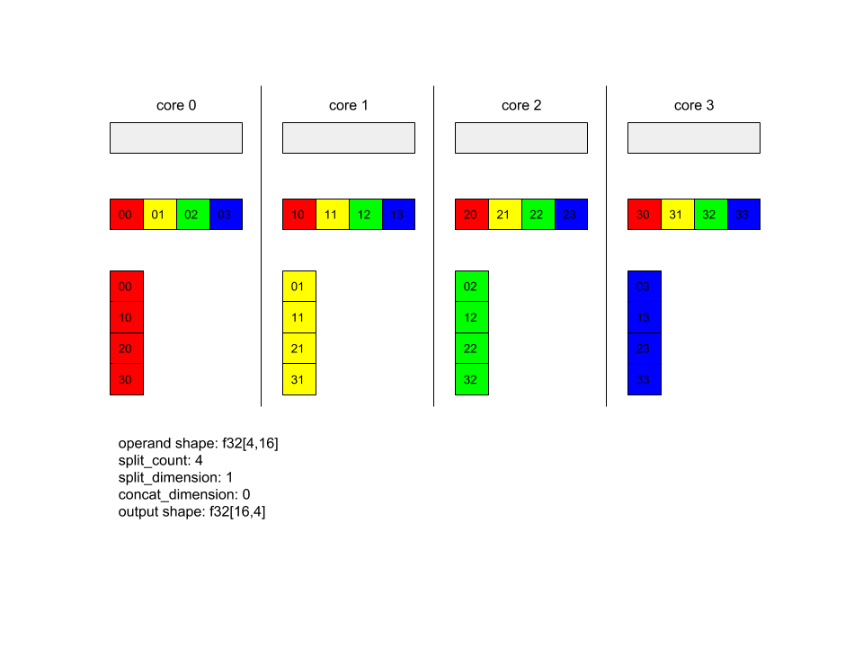
In this example, there are 4 cores participating the Alltoall. On each core, the operand is split into 4 parts along dimension 0, so each part has shape f32[4,4]. The 4 parts are scattered to all cores. Then each core concatenates the received parts along dimension 1, in the order or core 0-4. So the output on each core has shape f32[16,4].
BatchNormGradlink
See also
XlaBuilder::BatchNormGrad
and the original batch normalization paper
for a detailed description of the algorithm.
Calculates gradients of batch norm.
BatchNormGrad(operand, scale, mean, variance, grad_output, epsilon, feature_index)
| Arguments | Type | Semantics |
|---|---|---|
operand |
XlaOp |
n dimensional array to be normalized (x) |
scale |
XlaOp |
1 dimensional array (\(\gamma\)) |
mean |
XlaOp |
1 dimensional array (\(\mu\)) |
variance |
XlaOp |
1 dimensional array (\(\sigma^2\)) |
grad_output |
XlaOp |
Gradients passed to BatchNormTraining (\( \nabla y\)) |
epsilon |
float |
Epsilon value (\(\epsilon\)) |
feature_index |
int64 |
Index to feature dimension in operand |
For each feature in the feature dimension (feature_index is the index for the
feature dimension in operand), the operation calculates the gradients with
respect to operand, offset and scale across all the other dimensions. The
feature_index must be a valid index for the feature dimension in operand.
The three gradients are defined by the following formulas (assuming a
4-dimensional array as operand and with feature dimension index l, batch
size m and spatial sizes w and h):
\[ \begin{split} c_l&= \frac{1}{mwh}\sum_{i=1}^m\sum_{j=1}^w\sum_{k=1}^h \left( \nabla y_{ijkl} \frac{x_{ijkl} - \mu_l}{\sigma^2_l+\epsilon} \right) \\ d_l&= \frac{1}{mwh}\sum_{i=1}^m\sum_{j=1}^w\sum_{k=1}^h \nabla y_{ijkl} \\ \nabla x_{ijkl} &= \frac{\gamma_{l}}{\sqrt{\sigma^2_{l}+\epsilon}} \left( \nabla y_{ijkl} - d_l - c_l (x_{ijkl} - \mu_{l}) \right) \\ \nabla \gamma_l &= \sum_{i=1}^m\sum_{j=1}^w\sum_{k=1}^h \left( \nabla y_{ijkl} \frac{x_{ijkl} - \mu_l}{\sqrt{\sigma^2_{l}+\epsilon}} \right) \\\ \nabla \beta_l &= \sum_{i=1}^m\sum_{j=1}^w\sum_{k=1}^h \nabla y_{ijkl} \end{split} \]
The inputs mean and variance represent moments value
across batch and spatial dimensions.
The output type is a tuple of three handles:
| Outputs | Type | Semantics |
|---|---|---|
grad_operand |
XlaOp |
gradient with respect to input operand (\( \nabla x\)) |
grad_scale |
XlaOp |
gradient with respect to input scale (\( \nabla \gamma\)) |
grad_offset |
XlaOp |
gradient with respect to input offset(\( \nabla \beta\)) |
BatchNormInferencelink
See also
XlaBuilder::BatchNormInference
and the original batch normalization paper
for a detailed description of the algorithm.
Normalizes an array across batch and spatial dimensions.
BatchNormInference(operand, scale, offset, mean, variance, epsilon, feature_index)
| Arguments | Type | Semantics |
|---|---|---|
operand |
XlaOp |
n dimensional array to be normalized |
scale |
XlaOp |
1 dimensional array |
offset |
XlaOp |
1 dimensional array |
mean |
XlaOp |
1 dimensional array |
variance |
XlaOp |
1 dimensional array |
epsilon |
float |
Epsilon value |
feature_index |
int64 |
Index to feature dimension in operand |
For each feature in the feature dimension (feature_index is the index for the
feature dimension in operand), the operation calculates the mean and variance
across all the other dimensions and uses the mean and variance to normalize each
element in operand. The feature_index must be a valid index for the feature
dimension in operand.
BatchNormInference is equivalent to calling BatchNormTraining without
computing mean and variance for each batch. It uses the input mean and
variance instead as estimated values. The purpose of this op is to reduce
latency in inference, hence the name BatchNormInference.
The output is an n-dimensional, normalized array with the same shape as input
operand.
BatchNormTraininglink
See also
XlaBuilder::BatchNormTraining
and the original batch normalization paper
for a detailed description of the algorithm.
Normalizes an array across batch and spatial dimensions.
BatchNormTraining(operand, scale, offset, epsilon, feature_index)
| Arguments | Type | Semantics |
|---|---|---|
operand |
XlaOp |
n dimensional array to be normalized (x) |
scale |
XlaOp |
1 dimensional array (\(\gamma\)) |
offset |
XlaOp |
1 dimensional array (\(\beta\)) |
epsilon |
float |
Epsilon value (\(\epsilon\)) |
feature_index |
int64 |
Index to feature dimension in operand |
For each feature in the feature dimension (feature_index is the index for the
feature dimension in operand), the operation calculates the mean and variance
across all the other dimensions and uses the mean and variance to normalize each
element in operand. The feature_index must be a valid index for the feature
dimension in operand.
The algorithm goes as follows for each batch in operand \(x\) that
contains m elements with w and h as the size of spatial dimensions
(assuming operand is an 4 dimensional array):
-
Calculates batch mean \(\mu_l\) for each feature
lin feature dimension: \(\mu_l=\frac{1}{mwh}\sum_{i=1}^m\sum_{j=1}^w\sum_{k=1}^h x_{ijkl}\) -
Calculates batch variance \(\sigma^2_l\): \(\sigma^2_l=\frac{1}{mwh}\sum_{i=1}^m\sum_{j=1}^w\sum_{k=1}^h (x_{ijkl} - \mu_l)^2\)
-
Normalizes, scales and shifts: \(y_{ijkl}=\frac{\gamma_l(x_{ijkl}-\mu_l)}{\sqrt[2]{\sigma^2_l+\epsilon}}+\beta_l\)
The epsilon value, usually a small number, is added to avoid divide-by-zero errors.
The output type is a tuple of three XlaOps:
| Outputs | Type | Semantics |
|---|---|---|
output |
XlaOp |
n dimensional array with the same shape as input operand (y) |
batch_mean |
XlaOp |
1 dimensional array (\(\mu\)) |
batch_var |
XlaOp |
1 dimensional array (\(\sigma^2\)) |
The batch_mean and batch_var are moments calculated across the batch and
spatial dimensions using the formulas above.
BitcastConvertTypelink
See also
XlaBuilder::BitcastConvertType.
Similar to a tf.bitcast in TensorFlow, performs an element-wise bitcast
operation from a data shape to a target shape. The input and output size must
match: e.g. s32 elements become f32 elements via bitcast routine, and one
s32 element will become four s8 elements. Bitcast is implemented as a
low-level cast, so machines with different floating-point representations will
give different results.
BitcastConvertType(operand, new_element_type)
| Arguments | Type | Semantics |
|---|---|---|
operand |
XlaOp |
array of type T with dims D |
new_element_type |
PrimitiveType |
type U |
The dimensions of the operand and the target shape must match, apart from the last dimension which will change by the ratio of the primitive size before and after the conversion.
The source and destination element types must not be tuples.
Bitcast-converting to primitive type of different widthlink
BitcastConvert HLO instruction supports the case where the size of the output
element type T' is not equal to the size of the input element T. As the
whole operation is conceptually a bitcast and does not change the underlying
bytes, the shape of the output element has to change. For B = sizeof(T), B' =
sizeof(T'), there are two possible cases.
First, when B > B', the output shape gets a new minor-most dimension of size
B/B'. For example:
f16[10,2]{1,0} %output = f16[10,2]{1,0} bitcast-convert(f32[10]{0} %input)The rule remains the same for effective scalars:
f16[2]{0} %output = f16[2]{0} bitcast-convert(f32[] %input)Alternatively, for B' > B the instruction requires the last logical dimension
of the input shape to be equal to B'/B, and this dimension is dropped during
the conversion:
f32[10]{0} %output = f32[10]{0} bitcast-convert(f16[10,2]{1,0} %input)Note that conversions between different bitwidths are not elementwise.
Broadcastlink
See also
XlaBuilder::Broadcast.
Adds dimensions to an array by duplicating the data in the array.
Broadcast(operand, broadcast_sizes)
| Arguments | Type | Semantics |
|---|---|---|
operand |
XlaOp |
The array to duplicate |
broadcast_sizes |
ArraySlice<int64> |
The sizes of the new dimensions |
The new dimensions are inserted on the left, i.e. if broadcast_sizes has
values {a0, ..., aN} and the operand shape has dimensions {b0, ..., bM} then
the shape of the output has dimensions {a0, ..., aN, b0, ..., bM}.
The new dimensions index into copies of the operand, i.e.
output[i0, ..., iN, j0, ..., jM] = operand[j0, ..., jM]For example, if operand is a scalar f32 with value 2.0f, and
broadcast_sizes is {2, 3}, then the result will be an array with shape
f32[2, 3] and all the values in the result will be 2.0f.
BroadcastInDimlink
See also
XlaBuilder::BroadcastInDim.
Expands the size and rank of an array by duplicating the data in the array.
BroadcastInDim(operand, out_dim_size, broadcast_dimensions)
| Arguments | Type | Semantics |
|---|---|---|
operand |
XlaOp |
The array to duplicate |
out_dim_size |
ArraySlice<int64> |
The sizes of the dimensions of the target shape |
broadcast_dimensions |
ArraySlice<int64> |
Which dimension in the target shape each dimension of the operand shape corresponds to |
Similar to Broadcast, but allows adding dimensions anywhere and expanding existing dimensions with size 1.
The operand is broadcast to the shape described by out_dim_size.
broadcast_dimensions maps the dimensions of operand to the dimensions of the
target shape, i.e. the i'th dimension of the operand is mapped to the
broadcast_dimension[i]'th dimension of the output shape. The dimensions of
operand must have size 1 or be the same size as the dimension in the output
shape they are mapped to. The remaining dimensions are filled with dimensions of
size 1. Degenerate-dimension broadcasting then broadcasts along these degenerate
dimensions to reach the output shape. The semantics are described in detail on
the broadcasting page.
Calllink
See also
XlaBuilder::Call.
Invokes a computation with the given arguments.
Call(computation, args...)
| Arguments | Type | Semantics |
|---|---|---|
computation |
XlaComputation |
computation of type T_0, T_1, ..., T_{N-1} -> S with N parameters of arbitrary type |
args |
sequence of N XlaOps |
N arguments of arbitrary type |
The arity and types of the args must match the parameters of the
computation. It is allowed to have no args.
Choleskylink
See also
XlaBuilder::Cholesky.
Computes the Cholesky decomposition of a batch of symmetric (Hermitian) positive definite matrices.
Cholesky(a, lower)
| Arguments | Type | Semantics |
|---|---|---|
a |
XlaOp |
a rank > 2 array of a complex or floating-point type. |
lower |
bool |
whether to use the upper or lower triangle of a. |
If lower is true, computes lower-triangular matrices l such that \(a = l
. l^T\). If lower is false, computes upper-triangular matrices u such
that \(a = u^T . u\).
Input data is read only from the lower/upper triangle of a, depending on the
value of lower. Values from the other triangle are ignored. Output data is
returned in the same triangle; the values in the other triangle are
implementation-defined and may be anything.
If the rank of a is greater than 2, a is treated as a batch of matrices,
where all except the minor 2 dimensions are batch dimensions.
If a is not symmetric (Hermitian) positive definite, the result is
implementation-defined.
Clamplink
See also
XlaBuilder::Clamp.
Clamps an operand to within the range between a minimum and maximum value.
Clamp(min, operand, max)
| Arguments | Type | Semantics |
|---|---|---|
min |
XlaOp |
array of type T |
operand |
XlaOp |
array of type T |
max |
XlaOp |
array of type T |
Given an operand and minimum and maximum values, returns the operand if it is in
the range between the minimum and maximum, else returns the minimum value if the
operand is below this range or the maximum value if the operand is above this
range. That is, clamp(a, x, b) = min(max(a, x), b).
All three arrays must be the same shape. Alternatively, as a restricted form of
broadcasting, min and/or max can be a scalar of type T.
Example with scalar min and max:
let operand: s32[3] = {-1, 5, 9};
let min: s32 = 0;
let max: s32 = 6;
==>
Clamp(min, operand, max) = s32[3]{0, 5, 6};Collapselink
See also
XlaBuilder::Collapse
and the tf.reshape operation.
Collapses dimensions of an array into one dimension.
Collapse(operand, dimensions)
| Arguments | Type | Semantics |
|---|---|---|
operand |
XlaOp |
array of type T |
dimensions |
int64 vector |
in-order, consecutive subset of T's dimensions. |
Collapse replaces the given subset of the operand's dimensions by a single
dimension. The input arguments are an arbitrary array of type T and a
compile-time-constant vector of dimension indices. The dimension indices must be
an in-order (low to high dimension numbers), consecutive subset of T's
dimensions. Thus, {0, 1, 2}, {0, 1}, or {1, 2} are all valid dimension sets, but
{1, 0} or {0, 2} are not. They are replaced by a single new dimension, in the
same position in the dimension sequence as those they replace, with the new
dimension size equal to the product of original dimension sizes. The lowest
dimension number in dimensions is the slowest varying dimension (most major)
in the loop nest which collapses these dimension, and the highest dimension
number is fastest varying (most minor). See the tf.reshape operator
if more general collapse ordering is needed.
For example, let v be an array of 24 elements:
let v = f32[4x2x3] {{{10, 11, 12}, {15, 16, 17}},
{{20, 21, 22}, {25, 26, 27}},
{{30, 31, 32}, {35, 36, 37}},
{{40, 41, 42}, {45, 46, 47}}};
// Collapse to a single dimension, leaving one dimension.
let v012 = Collapse(v, {0,1,2});
then v012 == f32[24] {10, 11, 12, 15, 16, 17,
20, 21, 22, 25, 26, 27,
30, 31, 32, 35, 36, 37,
40, 41, 42, 45, 46, 47};
// Collapse the two lower dimensions, leaving two dimensions.
let v01 = Collapse(v, {0,1});
then v01 == f32[4x6] {{10, 11, 12, 15, 16, 17},
{20, 21, 22, 25, 26, 27},
{30, 31, 32, 35, 36, 37},
{40, 41, 42, 45, 46, 47}};
// Collapse the two higher dimensions, leaving two dimensions.
let v12 = Collapse(v, {1,2});
then v12 == f32[8x3] {{10, 11, 12},
{15, 16, 17},
{20, 21, 22},
{25, 26, 27},
{30, 31, 32},
{35, 36, 37},
{40, 41, 42},
{45, 46, 47}};
CollectivePermutelink
See also
XlaBuilder::CollectivePermute.
CollectivePermute is a collective operation that sends and receives data cross replicas.
CollectivePermute(operand, source_target_pairs)
| Arguments | Type | Semantics |
|---|---|---|
operand |
XlaOp |
n dimensional input array |
source_target_pairs |
<int64, int64> vector |
A list of (source_replica_id, target_replica_id) pairs. For each pair, the operand is sent from source replica to target replica. |
Note that there are the following restrictions on the source_target_pair:
- Any two pairs should not have the same target replica id, and they should not have the same source replica id.
- If a replica id is not a target in any pair, then the output on that replica is a tensor consists of 0(s) with the same shape as the input.
Concatenatelink
See also
XlaBuilder::ConcatInDim.
Concatenate composes an array from multiple array operands. The array is of the same rank as each of the input array operands (which must be of the same rank as each other) and contains the arguments in the order that they were specified.
Concatenate(operands..., dimension)
| Arguments | Type | Semantics |
|---|---|---|
operands |
sequence of N XlaOp |
N arrays of type T with dimensions [L0, L1, ...]. Requires N >= 1. |
dimension |
int64 |
A value in the interval [0, N) that names the dimension to be concatenated between the operands. |
With the exception of dimension all dimensions must be the same. This is
because XLA does not support "ragged" arrays. Also note that rank-0 values
cannot be concatenated (as it's impossible to name the dimension along which the
concatenation occurs).
1-dimensional example:
Concat({{2, 3}, {4, 5}, {6, 7}}, 0)
>>> {2, 3, 4, 5, 6, 7}2-dimensional example:
let a = {
{1, 2},
{3, 4},
{5, 6},
};
let b = {
{7, 8},
};
Concat({a, b}, 0)
>>> {
{1, 2},
{3, 4},
{5, 6},
{7, 8},
}Diagram:
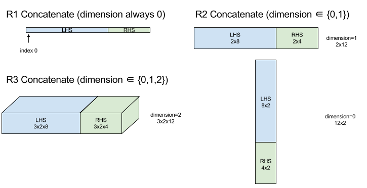
Conditionallink
See also
XlaBuilder::Conditional.
Conditional(pred, true_operand, true_computation, false_operand,
false_computation)
| Arguments | Type | Semantics |
|---|---|---|
pred |
XlaOp |
Scalar of type PRED |
true_operand |
XlaOp |
Argument of type \(T_0\) |
true_computation |
XlaComputation |
XlaComputation of type \(T_0 \to S\) |
false_operand |
XlaOp |
Argument of type \(T_1\) |
false_computation |
XlaComputation |
XlaComputation of type \(T_1 \to S\) |
Executes true_computation if pred is true, false_computation if pred
is false, and returns the result.
The true_computation must take in a single argument of type \(T_0\) and will
be invoked with true_operand which must be of the same type. The
false_computation must take in a single argument of type \(T_1\) and will be
invoked with false_operand which must be of the same type. The type of the
returned value of true_computation and false_computation must be the same.
Note that only one of true_computation and false_computation will be
executed depending on the value of pred.
Conditional(branch_index, branch_computations, branch_operands)
| Arguments | Type | Semantics |
|---|---|---|
branch_index |
XlaOp |
Scalar of type S32 |
branch_computations |
sequence of N XlaComputation |
XlaComputations of type \( T_0 \to S , T_1 \to S , ..., T_{N-1} \to S \) |
branch_operands |
sequence of N XlaOp |
Arguments of type \( T_0 , T_1 , ..., T_{N-1} \) |
Executes branch_computations[branch_index], and returns the result. If
branch_index is an S32 which is < 0 or >= N, then branch_computations[N-1]
is executed as the default branch.
Each branch_computations[b] must take in a single argument of type T_b and
will be invoked with branch_operands[b] which must be of the same type. The
type of the returned value of each branch_computations[b] must be the same.
Note that only one of the branch_computations will be executed depending on
the value of branch_index.
Conv (convolution)link
See also
XlaBuilder::Conv.
As ConvWithGeneralPadding, but the padding is specified in a short-hand way as
either SAME or VALID. SAME padding pads the input (lhs) with zeroes so that
the output has the same shape as the input when not taking striding into
account. VALID padding simply means no padding.
ConvWithGeneralPadding (convolution)link
See also
XlaBuilder::ConvWithGeneralPadding.
Computes a convolution of the kind used in neural networks. Here, a convolution can be thought of as a n-dimensional window moving across a n-dimensional base area and a computation is performed for each possible position of the window.
| Arguments | Type | Semantics |
|---|---|---|
lhs |
XlaOp |
rank n+2 array of inputs |
rhs |
XlaOp |
rank n+2 array of kernel weights |
window_strides |
ArraySlice<int64> |
n-d array of kernel strides |
padding |
ArraySlice< pair<int64,int64>> |
n-d array of (low, high) padding |
lhs_dilation |
ArraySlice<int64> |
n-d lhs dilation factor array |
rhs_dilation |
ArraySlice<int64> |
n-d rhs dilation factor array |
feature_group_count |
int64 | the number of feature groups |
batch_group_count |
int64 | the number of batch groups |
Let n be the number of spatial dimensions. The lhs argument is a rank n+2
array describing the base area. This is called the input, even though of course
the rhs is also an input. In a neural network, these are the input activations.
The n+2 dimensions are, in this order:
batch: Each coordinate in this dimension represents an independent input for which convolution is carried out.z/depth/features: Each (y,x) position in the base area has a vector associated to it, which goes into this dimension.spatial_dims: Describes thenspatial dimensions that define the base area that the window moves across.
The rhs argument is a rank n+2 array describing the convolutional
filter/kernel/window. The dimensions are, in this order:
output-z: Thezdimension of the output.input-z: The size of this dimension timesfeature_group_countshould equal the size of thezdimension in lhs.spatial_dims: Describes thenspatial dimensions that define the n-d window that moves across the base area.
The window_strides argument specifies the stride of the convolutional window
in the spatial dimensions. For example, if the stride in the first spatial
dimension is 3, then the window can only be placed at coordinates where the
first spatial index is divisible by 3.
The padding argument specifies the amount of zero padding to be applied to the
base area. The amount of padding can be negative -- the absolute value of
negative padding indicates the number of elements to remove from the specified
dimension before doing the convolution. padding[0] specifies the padding for
dimension y and padding[1] specifies the padding for dimension x. Each
pair has the low padding as the first element and the high padding as the second
element. The low padding is applied in the direction of lower indices while the
high padding is applied in the direction of higher indices. For example, if
padding[1] is (2,3) then there will be a padding by 2 zeroes on the left and
by 3 zeroes on the right in the second spatial dimension. Using padding is
equivalent to inserting those same zero values into the input (lhs) before
doing the convolution.
The lhs_dilation and rhs_dilation arguments specify the dilation factor to
be applied to the lhs and rhs, respectively, in each spatial dimension. If the
dilation factor in a spatial dimension is d, then d-1 holes are implicitly
placed between each of the entries in that dimension, increasing the size of the
array. The holes are filled with a no-op value, which for convolution means
zeroes.
Dilation of the rhs is also called atrous convolution. For more details, see
tf.nn.atrous_conv2d. Dilation of the lhs is also called transposed
convolution. For more details, see tf.nn.conv2d_transpose.
The feature_group_count argument (default value 1) can be used for grouped
convolutions. feature_group_count needs to be a divisor of both the input and
the output feature dimension. If feature_group_count is greater than 1, it
means that conceptually the input and output feature dimension and the rhs
output feature dimension are split evenly into feature_group_count many
groups, each group consisting of a consecutive subsequence of features. The
input feature dimension of rhs needs to be equal to the lhs input feature
dimension divided by feature_group_count (so it already has the size of a
group of input features). The i-th groups are used together to compute
feature_group_count many separate convolutions. The results of these
convolutions are concatenated together in the output feature dimension.
For depthwise convolution the feature_group_count argument would be set to the
input feature dimension, and the filter would be reshaped from
[filter_height, filter_width, in_channels, channel_multiplier] to
[filter_height, filter_width, 1, in_channels * channel_multiplier]. For more
details, see tf.nn.depthwise_conv2d.
The batch_group_count (default value 1) argument can be used for grouped
filters during backpropagation. batch_group_count needs to be a divisor of the
size of the lhs (input) batch dimension. If batch_group_count is greater
than 1, it means that the output batch dimension should be of size input batch
/ batch_group_count. The batch_group_count must be a divisor of the output
feature size.
The output shape has these dimensions, in this order:
batch: The size of this dimension timesbatch_group_countshould equal the size of thebatchdimension in lhs.z: Same size asoutput-zon the kernel (rhs).spatial_dims: One value for each valid placement of the convolutional window.
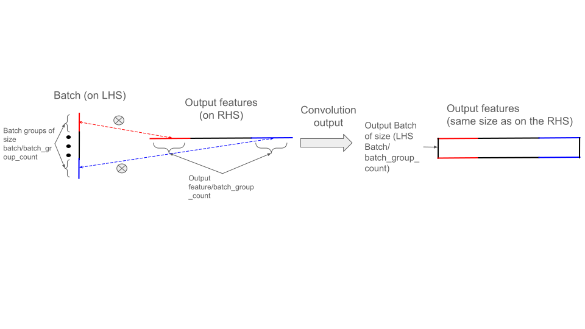
The figure above shows how batch_group_count field works. Effectively, we
slice each lhs batch into batch_group_count groups, and do the same for the
output features. Then, for each of these groups we do pairwise convolutions and
concatenate the output along the output feature dimension. The operational
semantics of all the other dimensions (feature and spatial) remain the same.
The valid placements of the convolutional window are determined by the strides and the size of the base area after padding.
To describe what a convolution does, consider a 2d convolution, and pick some
fixed batch, z, y, x coordinates in the output. Then (y,x) is a
position of a corner of the window within the base area (e.g. the upper left
corner, depending on how you interpret the spatial dimensions). We now have a 2d
window, taken from the base area, where each 2d point is associated to a 1d
vector, so we get a 3d box. From the convolutional kernel, since we fixed the
output coordinate z, we also have a 3d box. The two boxes have the same
dimensions, so we can take the sum of the element-wise products between the two
boxes (similar to a dot product). That is the output value.
Note that if output-z is e.g., 5, then each position of the window produces 5
values in the output into the z dimension of the output. These values differ
in what part of the convolutional kernel is used - there is a separate 3d box of
values used for each output-z coordinate. So you could think of it as 5
separate convolutions with a different filter for each of them.
Here is pseudo-code for a 2d convolution with padding and striding:
for (b, oz, oy, ox) { // output coordinates
value = 0;
for (iz, ky, kx) { // kernel coordinates and input z
iy = oy*stride_y + ky - pad_low_y;
ix = ox*stride_x + kx - pad_low_x;
if ((iy, ix) inside the base area considered without padding) {
value += input(b, iz, iy, ix) * kernel(oz, iz, ky, kx);
}
}
output(b, oz, oy, ox) = value;
}ConvertElementTypelink
See also
XlaBuilder::ConvertElementType.
Similar to an element-wise static_cast in C++, performs an element-wise
conversion operation from a data shape to a target shape. The dimensions must
match, and the conversion is an element-wise one; e.g. s32 elements become
f32 elements via an s32-to-f32 conversion routine.
ConvertElementType(operand, new_element_type)
| Arguments | Type | Semantics |
|---|---|---|
operand |
XlaOp |
array of type T with dims D |
new_element_type |
PrimitiveType |
type U |
The dimensions of the operand and the target shape must match. The source and destination element types must not be tuples.
A conversion such as T=s32 to U=f32 will perform a normalizing int-to-float
conversion routine such as round-to-nearest-even.
Note: The precise float-to-int and visa-versa conversions are currently unspecified, but may become additional arguments to the convert operation in the future. Not all possible conversions have been implemented for all targets.
let a: s32[3] = {0, 1, 2};
let b: f32[3] = convert(a, f32);
then b == f32[3]{0.0, 1.0, 2.0}CrossReplicaSumlink
Performs AllReduce with a summation computation.
CustomCalllink
See also
XlaBuilder::CustomCall.
Call a user-provided function within a computation.
CustomCall(target_name, args..., shape)
| Arguments | Type | Semantics |
|---|---|---|
target_name |
string |
Name of the function. A call instruction will be emitted which targets this symbol name. |
args |
sequence of N XlaOps |
N arguments of arbitrary type, which will be passed to the function. |
shape |
Shape |
Output shape of the function |
The function signature is the same, regardless of the arity or type of args:
extern "C" void target_name(void* out, void** in);For example, if CustomCall is used as follows:
let x = f32[2] {1,2};
let y = f32[2x3] {{10, 20, 30}, {40, 50, 60}};
CustomCall("myfunc", {x, y}, f32[3x3])Here is an example of an implementation of myfunc:
extern "C" void myfunc(void* out, void** in) {
float (&x)[2] = *static_cast<float(*)[2]>(in[0]);
float (&y)[2][3] = *static_cast<float(*)[2][3]>(in[1]);
EXPECT_EQ(1, x[0]);
EXPECT_EQ(2, x[1]);
EXPECT_EQ(10, y[0][0]);
EXPECT_EQ(20, y[0][1]);
EXPECT_EQ(30, y[0][2]);
EXPECT_EQ(40, y[1][0]);
EXPECT_EQ(50, y[1][1]);
EXPECT_EQ(60, y[1][2]);
float (&z)[3][3] = *static_cast<float(*)[3][3]>(out);
z[0][0] = x[1] + y[1][0];
// ...
}The user-provided function must not have side-effects and its execution must be idempotent.
Note: The opaque nature of the user-provided function restricts optimization opportunities for the compiler. Try to express your computation in terms of native XLA ops whenever possible; only use CustomCall as a last resort.
Dotlink
See also
XlaBuilder::Dot.
Dot(lhs, rhs)
| Arguments | Type | Semantics |
|---|---|---|
lhs |
XlaOp |
array of type T |
rhs |
XlaOp |
array of type T |
The exact semantics of this operation depend on the ranks of the operands:
| Input | Output | Semantics |
|---|---|---|
vector [n] dot vector [n] |
scalar | vector dot product |
matrix [m x k] dot vector [k] |
vector [m] | matrix-vector multiplication |
matrix [m x k] dot matrix [k x n] |
matrix [m x n] | matrix-matrix multiplication |
The operation performs sum of products over the second dimension of lhs (or
the first if it has rank 1) and the first dimension of rhs. These are the
"contracted" dimensions. The contracted dimensions of lhs and rhs must be of
the same size. In practice, it can be used to perform dot products between
vectors, vector/matrix multiplications or matrix/matrix multiplications.
DotGenerallink
See also
XlaBuilder::DotGeneral.
DotGeneral(lhs, rhs, dimension_numbers)
| Arguments | Type | Semantics |
|---|---|---|
lhs |
XlaOp |
array of type T |
rhs |
XlaOp |
array of type T |
dimension_numbers |
DotDimensionNumbers |
contracting and batch dimension numbers |
As Dot, but allows contracting and batch dimension numbers to be specified for both the 'lhs' and 'rhs'.
| DotDimensionNumbers Fields | Type | Semantics |
|---|---|---|
| 'lhs_contracting_dimensions' | repeated int64 | 'lhs' contracting dimension numbers |
| 'rhs_contracting_dimensions' | repeated int64 | 'rhs' contracting dimension numbers |
| 'lhs_batch_dimensions' | repeated int64 | 'lhs' batch dimension numbers |
| 'rhs_batch_dimensions' | repeated int64 | 'rhs' batch dimension numbers |
DotGeneral performs the sum of products over contracting dimensions specified in 'dimension_numbers'.
Associated contracting dimension numbers from the 'lhs' and 'rhs' do not need to be the same but must have the same dimension sizes.
Example with contracting dimension numbers:
lhs = { {1.0, 2.0, 3.0},
{4.0, 5.0, 6.0} }
rhs = { {1.0, 1.0, 1.0},
{2.0, 2.0, 2.0} }
DotDimensionNumbers dnums;
dnums.add_lhs_contracting_dimensions(1);
dnums.add_rhs_contracting_dimensions(1);
DotGeneral(lhs, rhs, dnums) -> { {6.0, 12.0},
{15.0, 30.0} }Associated batch dimension numbers from the 'lhs' and 'rhs' must have the same dimension sizes.
Example with batch dimension numbers (batch size 2, 2x2 matrices):
lhs = { { {1.0, 2.0},
{3.0, 4.0} },
{ {5.0, 6.0},
{7.0, 8.0} } }
rhs = { { {1.0, 0.0},
{0.0, 1.0} },
{ {1.0, 0.0},
{0.0, 1.0} } }
DotDimensionNumbers dnums;
dnums.add_lhs_contracting_dimensions(2);
dnums.add_rhs_contracting_dimensions(1);
dnums.add_lhs_batch_dimensions(0);
dnums.add_rhs_batch_dimensions(0);
DotGeneral(lhs, rhs, dnums) -> { { {1.0, 2.0},
{3.0, 4.0} },
{ {5.0, 6.0},
{7.0, 8.0} } }| Input | Output | Semantics |
|---|---|---|
[b0, m, k] dot [b0, k, n] |
[b0, m, n] | batch matmul |
[b0, b1, m, k] dot [b0, b1, k, n] |
[b0, b1, m, n] | batch matmul |
It follows that the resulting dimension number starts with the batch dimension, then the 'lhs' non-contracting/non-batch dimension, and finally the 'rhs' non-contracting/non-batch dimension.
DynamicSlicelink
See also
XlaBuilder::DynamicSlice.
DynamicSlice extracts a sub-array from the input array at dynamic
start_indices. The size of the slice in each dimension is passed in
size_indices, which specify the end point of exclusive slice intervals in each
dimension: [start, start + size). The shape of start_indices must be rank ==
1, with dimension size equal to the rank of operand.
DynamicSlice(operand, start_indices, size_indices)
| Arguments | Type | Semantics |
|---|---|---|
operand |
XlaOp |
N dimensional array of type T |
start_indices |
sequence of N XlaOp |
List of N scalar integers containing the starting indices of the slice for each dimension. Value must be greater than or equal to zero. |
size_indices |
ArraySlice<int64> |
List of N integers containing the slice size for each dimension. Each value must be strictly greater than zero, and start + size must be less than or equal to the size of the dimension to avoid wrapping modulo dimension size. |
The effective slice indices are computed by applying the following
transformation for each index i in [1, N) before performing the slice:
start_indices[i] = clamp(start_indices[i], 0, operand.dimension_size[i] - size_indices[i])This ensures that the extracted slice is always in-bounds with respect to the operand array. If the slice is in-bounds before the transformation is applied, the transformation has no effect.
1-dimensional example:
let a = {0.0, 1.0, 2.0, 3.0, 4.0}
let s = {2}
DynamicSlice(a, s, {2}) produces:
{2.0, 3.0}2-dimensional example:
let b =
{ {0.0, 1.0, 2.0},
{3.0, 4.0, 5.0},
{6.0, 7.0, 8.0},
{9.0, 10.0, 11.0} }
let s = {2, 1}
DynamicSlice(b, s, {2, 2}) produces:
{ { 7.0, 8.0},
{10.0, 11.0} }DynamicUpdateSlicelink
See also
XlaBuilder::DynamicUpdateSlice.
DynamicUpdateSlice generates a result which is the value of the input array
operand, with a slice update overwritten at start_indices.
The shape of update determines the shape of the sub-array of the result which
is updated.
The shape of start_indices must be rank == 1, with dimension size equal to
the rank of operand.
DynamicUpdateSlice(operand, update, start_indices)
| Arguments | Type | Semantics |
|---|---|---|
operand |
XlaOp |
N dimensional array of type T |
update |
XlaOp |
N dimensional array of type T containing the slice update. Each dimension of update shape must be strictly greater than zero, and start + update must be less than or equal to the operand size for each dimension to avoid generating out-of-bounds update indices. |
start_indices |
sequence of N XlaOp |
List of N scalar integers containing the starting indices of the slice for each dimension. Value must be greater than or equal to zero. |
The effective slice indices are computed by applying the following
transformation for each index i in [1, N) before performing the slice:
start_indices[i] = clamp(start_indices[i], 0, operand.dimension_size[i] - update.dimension_size[i])This ensures that the updated slice is always in-bounds with respect to the operand array. If the slice is in-bounds before the transformation is applied, the transformation has no effect.
1-dimensional example:
let a = {0.0, 1.0, 2.0, 3.0, 4.0}
let u = {5.0, 6.0}
let s = {2}
DynamicUpdateSlice(a, u, s) produces:
{0.0, 1.0, 5.0, 6.0, 4.0}2-dimensional example:
let b =
{ {0.0, 1.0, 2.0},
{3.0, 4.0, 5.0},
{6.0, 7.0, 8.0},
{9.0, 10.0, 11.0} }
let u =
{ {12.0, 13.0},
{14.0, 15.0},
{16.0, 17.0} }
let s = {1, 1}
DynamicUpdateSlice(b, u, s) produces:
{ {0.0, 1.0, 2.0},
{3.0, 12.0, 13.0},
{6.0, 14.0, 15.0},
{9.0, 16.0, 17.0} }Element-wise binary arithmetic operationslink
See also
XlaBuilder::Add.
A set of element-wise binary arithmetic operations is supported.
Op(lhs, rhs)
Where Op is one of Add (addition), Sub (subtraction), Mul
(multiplication), Div (division), Rem (remainder), Max (maximum), Min
(minimum), LogicalAnd (logical AND), or LogicalOr (logical OR).
| Arguments | Type | Semantics |
|---|---|---|
lhs |
XlaOp |
left-hand-side operand: array of type T |
rhs |
XlaOp |
right-hand-side operand: array of type T |
The arguments' shapes have to be either similar or compatible. See the broadcasting documentation about what it means for shapes to be compatible. The result of an operation has a shape which is the result of broadcasting the two input arrays. In this variant, operations between arrays of different ranks are not supported, unless one of the operands is a scalar.
When Op is Rem, the sign of the result is taken from the dividend, and the
absolute value of the result is always less than the divisor's absolute value.
Integer division overflow (signed/unsigned division/remainder by zero or signed
division/remainder of INT_SMIN with -1) produces an implementation defined
value.
An alternative variant with different-rank broadcasting support exists for these operations:
Op(lhs, rhs, broadcast_dimensions)
Where Op is the same as above. This variant of the operation should be used
for arithmetic operations between arrays of different ranks (such as adding a
matrix to a vector).
The additional broadcast_dimensions operand is a slice of integers used to
expand the rank of the lower-rank operand up to the rank of the higher-rank
operand. broadcast_dimensions maps the dimensions of the lower-rank shape to
the dimensions of the higher-rank shape. The unmapped dimensions of the expanded
shape are filled with dimensions of size one. Degenerate-dimension broadcasting
then broadcasts the shapes along these degenerate dimensions to equalize the
shapes of both operands. The semantics are described in detail on the
broadcasting page.
Element-wise comparison operationslink
See also
XlaBuilder::Eq.
A set of standard element-wise binary comparison operations is supported. Note that standard IEEE 754 floating-point comparison semantics apply when comparing floating-point types.
Op(lhs, rhs)
Where Op is one of Eq (equal-to), Ne (not equal-to), Ge
(greater-or-equal-than), Gt (greater-than), Le (less-or-equal-than), Lt
(less-than). Another set of operators, EqTotalOrder, NeTotalOrder, GeTotalOrder,
GtTotalOrder, LeTotalOrder, and LtTotalOrder, provide the same functionalities,
except that they additionally support a total order over the floating point
numbers, by enforcing -NaN < -Inf < -Finite < -0 < +0 < +Finite < +Inf < +NaN.
| Arguments | Type | Semantics |
|---|---|---|
lhs |
XlaOp |
left-hand-side operand: array of type T |
rhs |
XlaOp |
right-hand-side operand: array of type T |
The arguments' shapes have to be either similar or compatible. See the
broadcasting documentation about what it means for shapes to
be compatible. The result of an operation has a shape which is the result of
broadcasting the two input arrays with the element type PRED. In this variant,
operations between arrays of different ranks are not supported, unless one of
the operands is a scalar.
An alternative variant with different-rank broadcasting support exists for these operations:
Op(lhs, rhs, broadcast_dimensions)
Where Op is the same as above. This variant of the operation should be used
for comparison operations between arrays of different ranks (such as adding a
matrix to a vector).
The additional broadcast_dimensions operand is a slice of integers specifying
the dimensions to use for broadcasting the operands. The semantics are described
in detail on the broadcasting page.
Element-wise unary functionslink
XlaBuilder supports these element-wise unary functions:
Abs(operand) Element-wise abs x -> |x|.
Ceil(operand) Element-wise ceil x -> ⌈x⌉.
Cos(operand) Element-wise cosine x -> cos(x).
Exp(operand) Element-wise natural exponential x -> e^x.
Floor(operand) Element-wise floor x -> ⌊x⌋.
Imag(operand) Element-wise imaginary part of a complex (or real)
shape. x -> imag(x). If the operand is a floating point type, returns 0.
IsFinite(operand) Tests whether each element of operand is finite,
i.e., is not positive or negative infinity, and is not NaN. Returns an array
of PRED values with the same shape as the input, where each element is true
if and only if the corresponding input element is finite.
Log(operand) Element-wise natural logarithm x -> ln(x).
LogicalNot(operand) Element-wise logical not x -> !(x).
Logistic(operand) Element-wise logistic function computation x ->
logistic(x).
PopulationCount(operand) Computes the number of bits set in each
element of operand.
Neg(operand) Element-wise negation x -> -x.
Real(operand) Element-wise real part of a complex (or real) shape.
x -> real(x). If the operand is a floating point type, returns the same value.
Rsqrt(operand) Element-wise reciprocal of square root operation
x -> 1.0 / sqrt(x).
Sign(operand) Element-wise sign operation x -> sgn(x) where
using the comparison operator of the element type of operand.
Sqrt(operand) Element-wise square root operation x -> sqrt(x).
Cbrt(operand) Element-wise cubic root operation x -> cbrt(x).
Tanh(operand) Element-wise hyperbolic tangent x -> tanh(x).
Round(operand) Element-wise rounding, ties away from zero.
RoundNearestEven(operand) Element-wise rounding, ties to nearest even.
| Arguments | Type | Semantics |
|---|---|---|
operand |
XlaOp |
The operand to the function |
The function is applied to each element in the operand array, resulting in an
array with the same shape. It is allowed for operand to be a scalar (rank 0).
Fftlink
The XLA FFT operation implements the forward and inverse Fourier Transforms for real and complex inputs/outputs. Multidimensional FFTs on up to 3 axes are supported.
See also
XlaBuilder::Fft.
| Arguments | Type | Semantics |
|---|---|---|
operand |
XlaOp |
The array we are Fourier transforming. |
fft_type |
FftType |
See the table below. |
fft_length |
ArraySlice<int64> |
The time-domain lengths of the axes being transformed. This is needed in particular for IRFFT to right-size the innermost axis, since RFFT(fft_length=[16]) has the same output shape as RFFT(fft_length=[17]). |
FftType |
Semantics |
|---|---|
FFT |
Forward complex-to-complex FFT. Shape is unchanged. |
IFFT |
Inverse complex-to-complex FFT. Shape is unchanged. |
RFFT |
Forward real-to-complex FFT. Shape of the innermost axis is reduced to fft_length[-1] // 2 + 1 if fft_length[-1] is a non-zero value, omitting the reversed conjugate part of the transformed signal beyond the Nyquist frequency. |
IRFFT |
Inverse real-to-complex FFT (i.e. takes complex, returns real). Shape of the innermost axis is expanded to fft_length[-1] if fft_length[-1] is a non-zero value, inferring the part of the transformed signal beyond the Nyquist frequency from the reverse conjugate of the 1 to fft_length[-1] // 2 + 1 entries. |
Multidimensional FFTlink
When more than 1 fft_length is provided, this is equivalent to applying a
cascade of FFT operations to each of the innermost axes. Note that for the
real->complex and complex->real cases, the innermost axis transform is
(effectively) performed first (RFFT; last for IRFFT), which is why the innermost
axis is the one which changes size. Other axis transforms will then be
complex->complex.
Implementation detailslink
CPU FFT is backed by Eigen's TensorFFT. GPU FFT uses cuFFT.
Gatherlink
The XLA gather operation stitches together several slices (each slice at a potentially different runtime offset) of an input array.
General Semanticslink
See also
XlaBuilder::Gather.
For a more intuitive description, see the "Informal Description" section below.
gather(operand, start_indices, offset_dims, collapsed_slice_dims, slice_sizes, start_index_map)
| Arguments | Type | Semantics |
|---|---|---|
operand |
XlaOp |
The array we’re gathering from. |
start_indices |
XlaOp |
Array containing the starting indices of the slices we gather. |
index_vector_dim |
int64 |
The dimension in start_indices that "contains" the starting indices. See below for a detailed description. |
offset_dims |
ArraySlice<int64> |
The set of dimensions in the output shape that offset into an array sliced from operand. |
slice_sizes |
ArraySlice<int64> |
slice_sizes[i] is the bounds for the slice on dimension i. |
collapsed_slice_dims |
ArraySlice<int64> |
The set of dimensions in each slice that are collapsed away. These dimensions must have size 1. |
start_index_map |
ArraySlice<int64> |
A map that describes how to map indices in start_indices to legal indices into operand. |
indices_are_sorted |
bool |
Whether the indices are guaranteed to be sorted by the caller. |
unique_indices |
bool |
Whether the indices are guaranteed to be unique by the caller. |
For convenience, we label dimensions in the output array not in offset_dims
as batch_dims.
The output is an array of rank batch_dims.size + offset_dims.size.
The operand.rank must equal the sum of offset_dims.size and
collapsed_slice_dims.size. Also, slice_sizes.size has to be equal to
operand.rank.
If index_vector_dim is equal to start_indices.rank we implicitly consider
start_indices to have a trailing 1 dimension (i.e. if start_indices was of
shape [6,7] and index_vector_dim is 2 then we implicitly consider the
shape of start_indices to be [6,7,1]).
The bounds for the output array along dimension i is computed as follows:
-
If
iis present inbatch_dims(i.e. is equal tobatch_dims[k]for somek) then we pick the corresponding dimension bounds out ofstart_indices.shape, skippingindex_vector_dim(i.e. pickstart_indices.shape.dims[k] ifk<index_vector_dimandstart_indices.shape.dims[k+1] otherwise). -
If
iis present inoffset_dims(i.e. equal tooffset_dims[k] for somek) then we pick the corresponding bound out ofslice_sizesafter accounting forcollapsed_slice_dims(i.e. we pickadjusted_slice_sizes[k] whereadjusted_slice_sizesisslice_sizeswith the bounds at indicescollapsed_slice_dimsremoved).
Formally, the operand index In corresponding to a given output index Out is
calculated as follows:
-
Let
G= {Out[k] forkinbatch_dims}. UseGto slice out a vectorSsuch thatS[i] =start_indices[Combine(G,i)] where Combine(A, b) inserts b at positionindex_vector_diminto A. Note that this is well defined even ifGis empty -- ifGis empty thenS=start_indices. -
Create a starting index,
Sin, intooperandusingSby scatteringSusingstart_index_map. More precisely:-
Sin[start_index_map[k]] =S[k] ifk<start_index_map.size. -
Sin[_] =0otherwise.
-
-
Create an index
Oinintooperandby scattering the indices at the offset dimensions inOutaccording to thecollapsed_slice_dimsset. More precisely:-
Oin[remapped_offset_dims(k)] =Out[offset_dims[k]] ifk<offset_dims.size(remapped_offset_dimsis defined below). -
Oin[_] =0otherwise.
-
-
InisOin+Sinwhere + is element-wise addition.
remapped_offset_dims is a monotonic function with domain [0,
offset_dims.size) and range [0, operand.rank) \ collapsed_slice_dims. So
if, e.g., offset_dims.size is 4, operand.rank is 6 and
collapsed_slice_dims is {0, 2} then remapped_offset_dims is {0→1,
1→3, 2→4, 3→5}.
If indices_are_sorted is set to true then XLA can assume that start_indices
are sorted (in ascending start_index_map order) by the user. If they are not
then the semantics is implementation defined.
If unique_indices is set to true then XLA can assume that all element
scattered to are unique. So XLA could use non-atomic operations. If
unique_indices is set to true and the indices being scattered to are not
unique then the semantics is implementation defined.
Informal Description and Exampleslink
Informally, every index Out in the output array corresponds to an element E
in the operand array, computed as follows:
-
We use the batch dimensions in
Outto look up a starting index fromstart_indices. -
We use
start_index_mapto map the starting index (whose size may be less than operand.rank) to a "full" starting index into theoperand. -
We dynamic-slice out a slice with size
slice_sizesusing the full starting index. -
We reshape the slice by collapsing the
collapsed_slice_dimsdimensions. Since all collapsed slice dimensions must have a bound of 1, this reshape is always legal. -
We use the offset dimensions in
Outto index into this slice to get the input element,E, corresponding to output indexOut.
index_vector_dim is set to start_indices.rank - 1 in all of the examples
that follow. More interesting values for index_vector_dim do not change the
operation fundamentally, but make the visual representation more cumbersome.
To get an intuition on how all of the above fits together, let's look at an
example that gathers 5 slices of shape [8,6] from a [16,11] array. The
position of a slice into the [16,11] array can be represented as an index
vector of shape S64[2], so the set of 5 positions can be represented as a
S64[5,2] array.
The behavior of the gather operation can then be depicted as an index
transformation that takes [G,O0,O1], an index in
the output shape, and maps it to an element in the input array in the following
way:
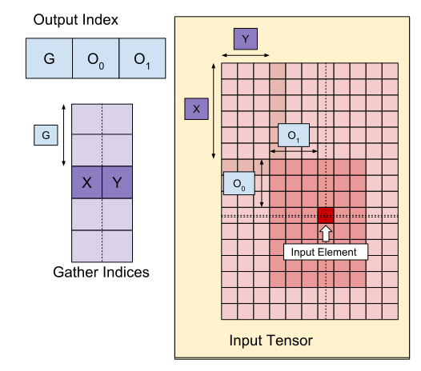
We first select an (X,Y) vector from the gather indices array using G.
The element in the output array at index
[G,O0,O1] is then the element in the input
array at index [X+O0,Y+O1].
slice_sizes is [8,6], which decides the range of O0 and
O1, and this in turn decides the bounds of the slice.
This gather operation acts as a batch dynamic slice with G as the batch
dimension.
The gather indices may be multidimensional. For instance, a more general
version of the example above using a "gather indices" array of shape [4,5,2]
would translate indices like this:
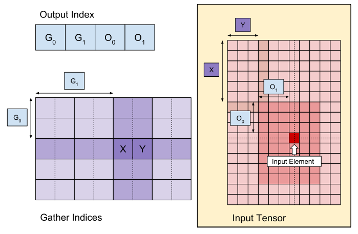
Again, this acts as a batch dynamic slice G0 and
G1 as the batch dimensions. The slice size is still [8,6].
The gather operation in XLA generalizes the informal semantics outlined above in the following ways:
-
We can configure which dimensions in the output shape are the offset dimensions (dimensions containing
O0,O1in the last example). The output batch dimensions (dimensions containingG0,G1in the last example) are defined to be the output dimensions that are not offset dimensions. -
The number of output offset dimensions explicitly present in the output shape may be smaller than the input rank. These "missing" dimensions, which are listed explicitly as
collapsed_slice_dims, must have a slice size of1. Since they have a slice size of1the only valid index for them is0and eliding them does not introduce ambiguity. -
The slice extracted from the "Gather Indices" array ((
X,Y) in the last example) may have fewer elements than the input array rank, and an explicit mapping dictates how the index should be expanded to have the same rank as the input.
As a final example, we use (2) and (3) to implement tf.gather_nd:
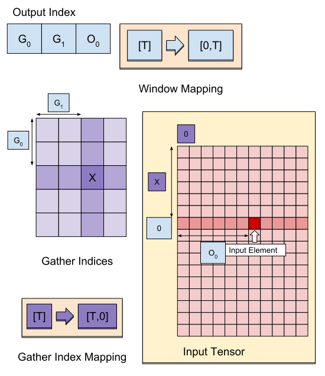
G0 and G1 are used to slice out a starting index
from the gather indices array as usual, except the starting index has only one
element, X. Similarly, there is only one output offset index with the value
O0. However, before being used as indices into the input array,
these are expanded in accordance to "Gather Index Mapping" (start_index_map in
the formal description) and "Offset Mapping" (remapped_offset_dims in the
formal description) into [X,0] and [0,O0] respectively,
adding up to [X,O0]. In other words, the output index
[G0,G1,O0] maps to the input index
[GatherIndices[G0,G1,0],O0]
which gives us the semantics for tf.gather_nd.
slice_sizes for this case is [1,11]. Intuitively this means that every
index X in the gather indices array picks an entire row and the result is the
concatenation of all these rows.
GetDimensionSizelink
See also
XlaBuilder::GetDimensionSize.
Returns the size of the given dimension of the operand. The operand must be array shaped.
GetDimensionSize(operand, dimension)
| Arguments | Type | Semantics |
|---|---|---|
operand |
XlaOp |
n dimensional input array |
dimension |
int64 |
A value in the interval [0, n) that specifies the dimension |
SetDimensionSizelink
See also
XlaBuilder::SetDimensionSize.
Sets the dynamic size of XlaOp's given dimension. The operand must be array shaped.
SetDimensionSize(operand, size, dimension)
| Arguments | Type | Semantics |
|---|---|---|
operand |
XlaOp |
n dimensional input array. |
size |
XlaOp |
int32 representing the runtime dynamic size. |
dimension |
int64 |
A value in the interval [0, n) that specifies the dimension. |
Pass through the operand as result, with dynamic dimension tracked by the compiler.
Padded values will be ignored by downstream reduction ops.
let v: f32[10] = f32[10]{1, 2, 3, 4, 5, 6, 7, 8, 9, 10};
let five: s32 = 5;
let six: s32 = 6;
// Setting dynamic dimension size doesn't change the upper bound of the static
// shape.
let padded_v_five: f32[10] = set_dimension_size(v, five, /*dimension=*/0);
let padded_v_six: f32[10] = set_dimension_size(v, six, /*dimension=*/0);
// sum == 1 + 2 + 3 + 4 + 5
let sum:f32[] = reduce_sum(padded_v_five);
// product == 1 * 2 * 3 * 4 * 5
let product:f32[] = reduce_product(padded_v_five);
// Changing padding size will yield different result.
// sum == 1 + 2 + 3 + 4 + 5 + 6
let sum:f32[] = reduce_sum(padded_v_six);GetTupleElementlink
See also
XlaBuilder::GetTupleElement.
Indexes into a tuple with a compile-time-constant value.
The value must be a compile-time-constant so that shape inference can determine the type of the resulting value.
This is analogous to std::get<int N>(t) in C++. Conceptually:
let v: f32[10] = f32[10]{0, 1, 2, 3, 4, 5, 6, 7, 8, 9};
let s: s32 = 5;
let t: (f32[10], s32) = tuple(v, s);
let element_1: s32 = gettupleelement(t, 1); // Inferred shape matches s32.See also tf.tuple.
Infeedlink
See also
XlaBuilder::Infeed.
Infeed(shape)
| Argument | Type | Semantics |
|---|---|---|
shape |
Shape |
Shape of the data read from the Infeed interface. The layout field of the shape must be set to match the layout of the data sent to the device; otherwise its behavior is undefined. |
Reads a single data item from the implicit Infeed streaming interface of the
device, interpreting the data as the given shape and its layout, and returns a
XlaOp of the data. Multiple Infeed operations are allowed in a
computation, but there must be a total order among the Infeed operations. For
example, two Infeeds in the code below have a total order since there is a
dependency between the while loops.
result1 = while (condition, init = init_value) {
Infeed(shape)
}
result2 = while (condition, init = result1) {
Infeed(shape)
}Nested tuple shapes are not supported. For an empty tuple shape, the Infeed operation is effectively a no-op and proceeds without reading any data from the Infeed of the device.
Note: We plan to allow multiple Infeed operations without a total order, in which case the compiler will provide information about how the Infeed operations are serialized in the compiled program.
Iotalink
See also
XlaBuilder::Iota.
Iota(shape, iota_dimension)
Builds a constant literal on device rather than a potentially large host
transfer. Creates an array that has specified shape and holds values starting at
zero and incrementing by one along the specified dimension. For floating-point
types, the produced array is equivalent to ConvertElementType(Iota(...)) where
the Iota is of integral type and the conversion is to the floating-point type.
| Arguments | Type | Semantics |
|---|---|---|
shape |
Shape |
Shape of the array created by Iota() |
iota_dimension |
int64 |
The dimension to increment along. |
For example, Iota(s32[4, 8], 0) returns
[[0, 0, 0, 0, 0, 0, 0, 0 ],
[1, 1, 1, 1, 1, 1, 1, 1 ],
[2, 2, 2, 2, 2, 2, 2, 2 ],
[3, 3, 3, 3, 3, 3, 3, 3 ]]Iota(s32[4, 8], 1) returns
[[0, 1, 2, 3, 4, 5, 6, 7 ],
[0, 1, 2, 3, 4, 5, 6, 7 ],
[0, 1, 2, 3, 4, 5, 6, 7 ],
[0, 1, 2, 3, 4, 5, 6, 7 ]]Maplink
See also
XlaBuilder::Map.
Map(operands..., computation)
| Arguments | Type | Semantics |
|---|---|---|
operands |
sequence of N XlaOps |
N arrays of types T_0..T_{N-1} |
computation |
XlaComputation |
computation of type T_0, T_1, .., T_{N + M -1} -> S with N parameters of type T and M of arbitrary type |
dimensions |
int64 array |
array of map dimensions |
Applies a scalar function over the given operands arrays, producing an array
of the same dimensions where each element is the result of the mapped function
applied to the corresponding elements in the input arrays.
The mapped function is an arbitrary computation with the restriction that it has
N inputs of scalar type T and a single output with type S. The output has
the same dimensions as the operands except that the element type T is replaced
with S.
For example: Map(op1, op2, op3, computation, par1) maps elem_out <-
computation(elem1, elem2, elem3, par1) at each (multi-dimensional) index in the
input arrays to produce the output array.
OptimizationBarrierlink
Blocks any optimization pass from moving computations across the barrier.
Ensures that all inputs are evaluated before any operators that depend on the barrier's outputs.
Padlink
See also
XlaBuilder::Pad.
Pad(operand, padding_value, padding_config)
| Arguments | Type | Semantics |
|---|---|---|
operand |
XlaOp |
array of type T |
padding_value |
XlaOp |
scalar of type T to fill in the added padding |
padding_config |
PaddingConfig |
padding amount on both edges (low, high) and between the elements of each dimension |
Expands the given operand array by padding around the array as well as between
the elements of the array with the given padding_value. padding_config
specifies the amount of edge padding and the interior padding for each
dimension.
PaddingConfig is a repeated field of PaddingConfigDimension, which contains
three fields for each dimension: edge_padding_low, edge_padding_high, and
interior_padding.
edge_padding_low and edge_padding_high specify the amount of padding added
at the low-end (next to index 0) and the high-end (next to the highest index) of
each dimension respectively. The amount of edge padding can be negative -- the
absolute value of negative padding indicates the number of elements to remove
from the specified dimension.
interior_padding specifies the amount of padding added between any two
elements in each dimension; it may not be negative. Interior padding occurs
logically before edge padding, so in the case of negative edge padding, elements
are removed from the interior-padded operand.
This operation is a no-op if the edge padding pairs are all (0, 0) and the
interior padding values are all 0. The figure below shows examples of different
edge_padding and interior_padding values for a two-dimensional array.
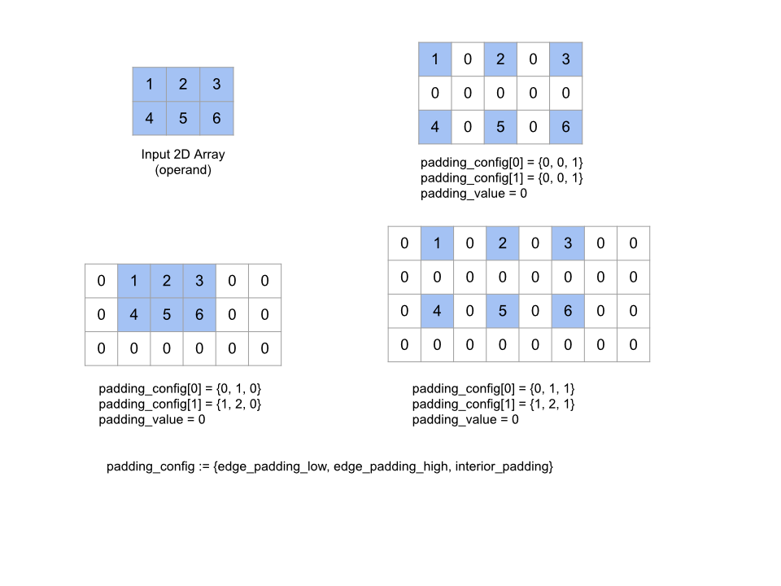
Recvlink
See also
XlaBuilder::Recv.
Recv(shape, channel_handle)
| Arguments | Type | Semantics |
|---|---|---|
shape |
Shape |
shape of the data to receive |
channel_handle |
ChannelHandle |
unique identifier for each send/recv pair |
Receives data of the given shape from a Send instruction in another
computation that shares the same channel handle. Returns a
XlaOp for the received data.
The client API of Recv operation represents synchronous communication.
However, the instruction is internally decomposed into 2 HLO instructions
(Recv and RecvDone) to enable asynchronous data transfers. See also
HloInstruction::CreateRecv and HloInstruction::CreateRecvDone.
Recv(const Shape& shape, int64 channel_id)
Allocates resources required to receive data from a Send instruction with the
same channel_id. Returns a context for the allocated resources, which is used
by a following RecvDone instruction to wait for the completion of the data
transfer. The context is a tuple of {receive buffer (shape), request identifier
(U32)} and it can only be used by a RecvDone instruction.
RecvDone(HloInstruction context)
Given a context created by a Recv instruction, waits for the data transfer to
complete and returns the received data.
Reducelink
See also
XlaBuilder::Reduce.
Applies a reduction function to one or more arrays in parallel.
Reduce(operands..., init_values..., computation, dimensions)
| Arguments | Type | Semantics |
|---|---|---|
operands |
Sequence of N XlaOp |
N arrays of types T_0, ..., T_{N-1}. |
init_values |
Sequence of N XlaOp |
N scalars of types T_0, ..., T_{N-1}. |
computation |
XlaComputation |
computation of type T_0, ..., T_{N-1}, T_0, ..., T_{N-1} -> Collate(T_0, ..., T_{N-1}). |
dimensions |
int64 array |
unordered array of dimensions to reduce. |
Where:
- N is required to be greater or equal to 1.
- The computation has to be "roughly" associative (see below).
- All input arrays must have the same dimensions.
- All initial values have to form an identity under
computation. - If
N = 1,Collate(T)isT. - If
N > 1,Collate(T_0, ..., T_{N-1})is a tuple ofNelements of typeT.
This operation reduces one or more dimensions of each input array into scalars.
The rank of each returned array is rank(operand) - len(dimensions). The output
of the op is Collate(Q_0, ..., Q_N) where Q_i is an array of type T_i, the
dimensions of which are described below.
Different backends are allowed to reassociate the reduction computation. This can lead to numerical differences, as some reduction functions like addition are not associative for floats. However, if the range of the data is limited, floating-point addition is close enough to being associative for most practical uses.
Exampleslink
When reducing across one dimension in a single 1D array with values [10, 11,
12, 13], with reduction function f (this is computation) then that could be
computed as
f(10, f(11, f(12, f(init_value, 13)))
but there are also many other possibilities, e.g.
f(init_value, f(f(10, f(init_value, 11)), f(f(init_value, 12), f(init_value, 13))))
The following is a rough pseudo-code example of how reduction could be implemented, using summation as the reduction computation with an initial value of 0.
result_shape <- remove all dims in dimensions from operand_shape
# Iterate over all elements in result_shape. The number of r's here is equal
# to the rank of the result
for r0 in range(result_shape[0]), r1 in range(result_shape[1]), ...:
# Initialize this result element
result[r0, r1...] <- 0
# Iterate over all the reduction dimensions
for d0 in range(dimensions[0]), d1 in range(dimensions[1]), ...:
# Increment the result element with the value of the operand's element.
# The index of the operand's element is constructed from all ri's and di's
# in the right order (by construction ri's and di's together index over the
# whole operand shape).
result[r0, r1...] += operand[ri... di]Here's an example of reducing a 2D array (matrix). The shape has rank 2, dimension 0 of size 2 and dimension 1 of size 3:
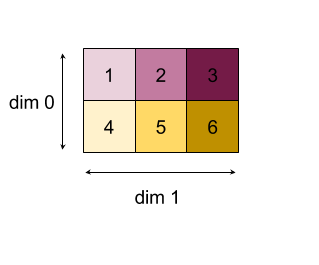
Results of reducing dimensions 0 or 1 with an "add" function:
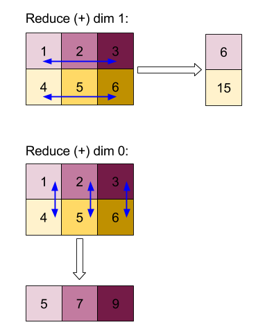
Note that both reduction results are 1D arrays. The diagram shows one as column and another as row just for visual convenience.
For a more complex example, here is a 3D array. Its rank is 3, dimension 0 of size 4, dimension 1 of size 2 and dimension 2 of size 3. For simplicity, the values 1 to 6 are replicated across dimension 0.
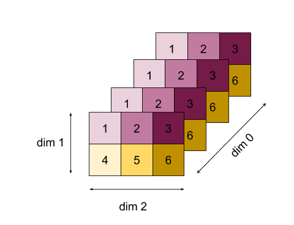
Similarly to the 2D example, we can reduce just one dimension. If we reduce dimension 0, for example, we get a rank-2 array where all values across dimension 0 were folded into a scalar:
| 4 8 12 |
| 16 20 24 |If we reduce dimension 2, we also get a rank-2 array where all values across dimension 2 were folded into a scalar:
| 6 15 |
| 6 15 |
| 6 15 |
| 6 15 |Note that the relative order between the remaining dimensions in the input is preserved in the output, but some dimensions may get assigned new numbers (since the rank changes).
We can also reduce multiple dimensions. Add-reducing dimensions 0 and 1 produces
the 1D array [20, 28, 36].
Reducing the 3D array over all its dimensions produces the scalar 84.
Variadic Reducelink
When N > 1, reduce function application is slightly more complex, as it is
applied simultaneously to all inputs. The operands are supplied to the
computation in the following order:
- Running reduced value for the first operand
- ...
- Running reduced value for the N'th operand
- Input value for the first operand
- ...
- Input value for the N'th operand
For example, consider the following reduction function, which can be used to compute the max and the argmax of a 1-D array in parallel:
f: (Float, Int, Float, Int) -> Float, Int
f(max, argmax, value, index):
if value >= max:
return (value, index)
else:
return (max, argmax)For 1-D Input arrays V = Float[N], K = Int[N], and init values
I_V = Float, I_K = Int, the result f_(N-1) of reducing across the only
input dimension is equivalent to the following recursive application:
f_0 = f(I_V, I_K, V_0, K_0)
f_1 = f(f_0.first, f_0.second, V_1, K_1)
...
f_(N-1) = f(f_(N-2).first, f_(N-2).second, V_(N-1), K_(N-1))Applying this reduction to an array of values, and an array of sequential indices (i.e. iota), will co-iterate over the arrays, and return a tuple containing the maximal value and the matching index.
ReducePrecisionlink
See also
XlaBuilder::ReducePrecision.
Models the effect of converting floating-point values to a lower-precision format (such as IEEE-FP16) and back to the original format. The number of exponent and mantissa bits in the lower-precision format can be specified arbitrarily, although all bit sizes may not be supported on all hardware implementations.
ReducePrecision(operand, mantissa_bits, exponent_bits)
| Arguments | Type | Semantics |
|---|---|---|
operand |
XlaOp |
array of floating-point type T. |
exponent_bits |
int32 |
number of exponent bits in lower-precision format |
mantissa_bits |
int32 |
number of mantissa bits in lower-precision format |
The result is an array of type T. The input values are rounded to the nearest
value representable with the given number of mantissa bits (using "ties to even"
semantics), and any values that exceed the range specified by the number of
exponent bits are clamped to positive or negative infinity. NaN values are
retained, although they may be converted to canonical NaN values.
The lower-precision format must have at least one exponent bit (in order to
distinguish a zero value from an infinity, since both have a zero mantissa), and
must have a non-negative number of mantissa bits. The number of exponent or
mantissa bits may exceed the corresponding value for type T; the corresponding
portion of the conversion is then simply a no-op.
ReduceScatterlink
See also
XlaBuilder::ReduceScatter.
ReduceScatter is a collective operation that effectively does an AllReduce and
then scatters the result by splitting it into shard_count blocks along the
scatter_dimension and replica i in the replica group receives the ith
shard.
ReduceScatter(operand, computation, scatter_dim, shard_count,
replica_group_ids, channel_id)
| Arguments | Type | Semantics |
|---|---|---|
operand |
XlaOp |
Array or a non-empty tuple of arrays to reduce across replicas. |
computation |
XlaComputation |
Reduction computation |
scatter_dimension |
int64 |
Dimension to scatter. |
shard_count |
int64 |
Number of blocks to split scatter_dimension |
replica_groups |
vector of vectors of int64 |
Groups between which the reductions are performed |
channel_id |
optional int64 |
Optional channel ID for cross-module communication |
- When
operandis a tuple of arrays, the reduce-scatter is performed on each element of the tuple. replica_groupsis a list of replica groups between which the reduction is performed (replica id for the current replica can be retrieved usingReplicaId). The order of replicas in each group determines the order in which the all-reduce result will be scattered.replica_groupsmust either be empty (in which case all replicas belong to a single group), or contain the same number of elements as the number of replicas. When there are more than one replica groups, they all must be of the same size. For example,replica_groups = {0, 2}, {1, 3}performs reduction between the replicas0and2, and1and3and then scatters the result.shard_countis the size of each replica group. We need this in cases wherereplica_groupsare empty. Ifreplica_groupsis not empty,shard_countmust be equal to the size of each replica group.channel_idis used for cross-module communication: onlyreduce-scatteroperations with the samechannel_idcan communicate with each other.
The output shape is the input shape with the scatter_dimension made
shard_count times smaller. For example, if there are two replicas and the
operand has the value [1.0, 2.25] and [3.0, 5.25] respectively on the two
replicas, then the output value from this op where scatter_dim is 0 will be
[4.0] for the first replica and [7.5] for the second replica.
ReduceWindowlink
See also
XlaBuilder::ReduceWindow.
Applies a reduction function to all elements in each window of a sequence of N
multi-dimensional arrays, producing a single or a tuple of N multi-dimensional
arrays as output. Each output array has the same number of elements as the
number of valid positions of the window. A pooling layer can be expressed as a
ReduceWindow. Similar to Reduce, the applied computation is
always passed the init_values on the left-hand side.
ReduceWindow(operands..., init_values..., computation, window_dimensions,
window_strides, padding)
| Arguments | Type | Semantics |
|---|---|---|
operands |
N XlaOps |
A sequence of N multi-dimensional arrays of types T_0,..., T_{N-1}, each representing the base area on which the window is placed. |
init_values |
N XlaOps |
The N starting values for the reduction, one for each of the N operands. See Reduce for details. |
computation |
XlaComputation |
Reduction function of type T_0, ..., T_{N-1}, T_0, ..., T_{N-1} -> Collate(T_0, ..., T_{N-1}), to apply to elements in each window of all the input operands. |
window_dimensions |
ArraySlice<int64> |
array of integers for window dimension values |
window_strides |
ArraySlice<int64> |
array of integers for window stride values |
base_dilations |
ArraySlice<int64> |
array of integers for base dilation values |
window_dilations |
ArraySlice<int64> |
array of integers for window dilation values |
padding |
Padding |
padding type for window (Padding::kSame, which pads so as to have the same output shape as input if the stride is 1, or Padding::kValid, which uses no padding and "stops" the window once it no longer fits) |
Where:
- N is required to be greater or equal to 1.
- All input arrays must have the same dimensions.
- If
N = 1,Collate(T)isT. - If
N > 1,Collate(T_0, ..., T_{N-1})is a tuple ofNelements of type(T0,...T{N-1}).
Below code and figure shows an example of using ReduceWindow. Input is a
matrix of size [4x6] and both window_dimensions and window_stride_dimensions are
[2x3].
// Create a computation for the reduction (maximum).
XlaComputation max;
{
XlaBuilder builder(client_, "max");
auto y = builder.Parameter(0, ShapeUtil::MakeShape(F32, {}), "y");
auto x = builder.Parameter(1, ShapeUtil::MakeShape(F32, {}), "x");
builder.Max(y, x);
max = builder.Build().value();
}
// Create a ReduceWindow computation with the max reduction computation.
XlaBuilder builder(client_, "reduce_window_2x3");
auto shape = ShapeUtil::MakeShape(F32, {4, 6});
auto input = builder.Parameter(0, shape, "input");
builder.ReduceWindow(
input,
/*init_val=*/builder.ConstantLiteral(LiteralUtil::MinValue(F32)),
*max,
/*window_dimensions=*/{2, 3},
/*window_stride_dimensions=*/{2, 3},
Padding::kValid);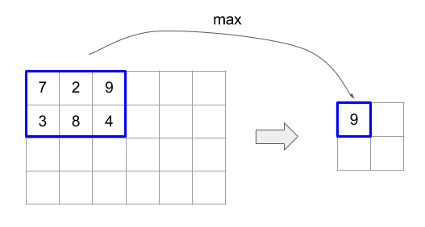
Stride of 1 in a dimension specifies that the position of a window in the dimension is 1 element away from its adjacent window. In order to specify that no windows overlap with each other, window_stride_dimensions should be equal to window_dimensions. The figure below illustrates the use of two different stride values. Padding is applied to each dimension of the input and the calculations are the same as though the input came in with the dimensions it has after padding.
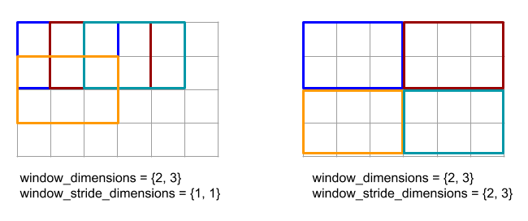
For a non-trivial padding example, consider computing reduce-window minimum
(initial value is MAX_FLOAT) with dimension 3 and stride 2 over the input
array [10000, 1000, 100, 10, 1]. Padding kValid computes minimums over two
valid windows: [10000, 1000, 100] and [100, 10, 1], resulting in the
output [100, 1]. Padding kSame first pads the array so that the shape after
the reduce-window would be the same as input for stride one by adding initial
elements on both sides, getting [MAX_VALUE, 10000, 1000, 100, 10, 1,
MAX_VALUE]. Running reduce-window over the padded array operates on three
windows [MAX_VALUE, 10000, 1000], [1000, 100, 10], [10, 1, MAX_VALUE], and
yields [1000, 10, 1].
The evaluation order of the reduction function is arbitrary and may be
non-deterministic. Therefore, the reduction function should not be overly
sensitive to reassociation. See the discussion about associativity in the
context of Reduce for more details.
ReplicaIdlink
See also
XlaBuilder::ReplicaId.
Returns the unique ID (U32 scalar) of the replica.
ReplicaId()
The unique ID of each replica is an unsigned integer in the interval [0, N),
where N is the number of replicas. Since all the replicas are running the same
program, a ReplicaId() call in the program will return a different value on
each replica.
Reshapelink
See also
XlaBuilder::Reshape
and the Collapse operation.
Reshapes the dimensions of an array into a new configuration.
Reshape(operand, new_sizes)
Reshape(operand, dimensions, new_sizes)
| Arguments | Type | Semantics |
|---|---|---|
operand |
XlaOp |
array of type T |
dimensions |
int64 vector |
order in which dimensions are collapsed |
new_sizes |
int64 vector |
vector of sizes of new dimensions |
Conceptually, reshape first flattens an array into a one-dimensional vector of
data values, and then refines this vector into a new shape. The input arguments
are an arbitrary array of type T, a compile-time-constant vector of dimension
indices, and a compile-time-constant vector of dimension sizes for the result.
The values in the dimension vector, if given, must be a permutation of all of
T's dimensions; the default if not given is {0, ..., rank - 1}. The order of
the dimensions in dimensions is from slowest-varying dimension (most major) to
fastest-varying dimension (most minor) in the loop nest which collapses the
input array into a single dimension. The new_sizes vector determines the size
of the output array. The value at index 0 in new_sizes is the size of
dimension 0, the value at index 1 is the size of dimension 1, and so on. The
product of the new_size dimensions must equal the product of the operand's
dimension sizes. When refining the collapsed array into the multidimensional
array defined by new_sizes, the dimensions in new_sizes are ordered from
slowest varying (most major) and to fastest varying (most minor).
For example, let v be an array of 24 elements:
let v = f32[4x2x3] {{{10, 11, 12}, {15, 16, 17}},
{{20, 21, 22}, {25, 26, 27}},
{{30, 31, 32}, {35, 36, 37}},
{{40, 41, 42}, {45, 46, 47}}};
In-order collapse:
let v012_24 = Reshape(v, {0,1,2}, {24});
then v012_24 == f32[24] {10, 11, 12, 15, 16, 17, 20, 21, 22, 25, 26, 27,
30, 31, 32, 35, 36, 37, 40, 41, 42, 45, 46, 47};
let v012_83 = Reshape(v, {0,1,2}, {8,3});
then v012_83 == f32[8x3] {{10, 11, 12}, {15, 16, 17},
{20, 21, 22}, {25, 26, 27},
{30, 31, 32}, {35, 36, 37},
{40, 41, 42}, {45, 46, 47}};
Out-of-order collapse:
let v021_24 = Reshape(v, {1,2,0}, {24});
then v012_24 == f32[24] {10, 20, 30, 40, 11, 21, 31, 41, 12, 22, 32, 42,
15, 25, 35, 45, 16, 26, 36, 46, 17, 27, 37, 47};
let v021_83 = Reshape(v, {1,2,0}, {8,3});
then v021_83 == f32[8x3] {{10, 20, 30}, {40, 11, 21},
{31, 41, 12}, {22, 32, 42},
{15, 25, 35}, {45, 16, 26},
{36, 46, 17}, {27, 37, 47}};
let v021_262 = Reshape(v, {1,2,0}, {2,6,2});
then v021_262 == f32[2x6x2] {{{10, 20}, {30, 40},
{11, 21}, {31, 41},
{12, 22}, {32, 42}},
{{15, 25}, {35, 45},
{16, 26}, {36, 46},
{17, 27}, {37, 47}}};As a special case, reshape can transform a single-element array to a scalar and vice versa. For example,
Reshape(f32[1x1] {{5}}, {0,1}, {}) == 5;
Reshape(5, {}, {1,1}) == f32[1x1] {{5}};Rev (reverse)link
See also
XlaBuilder::Rev.
Rev(operand, dimensions)
| Arguments | Type | Semantics |
|---|---|---|
operand |
XlaOp |
array of type T |
dimensions |
ArraySlice<int64> |
dimensions to reverse |
Reverses the order of elements in the operand array along the specified
dimensions, generating an output array of the same shape. Each element of the
operand array at a multidimensional index is stored into the output array at a
transformed index. The multidimensional index is transformed by reversing the
index in each dimension to be reversed (i.e., if a dimension of size N is one of
the reversing dimensions, its index i is transformed into N - 1 - i).
One use for the Rev operation is to reverse the convolution weight array along
the two window dimensions during the gradient computation in neural networks.
RngNormallink
See also
XlaBuilder::RngNormal.
Constructs an output of a given shape with random numbers generated following the \(\(N(\mu, \sigma)\)\) normal distribution. The parameters \(\(\mu\)\) and \(\(\sigma\)\), and output shape have to have a floating point elemental type. The parameters furthermore have to be scalar valued.
RngNormal(mu, sigma, shape)
| Arguments | Type | Semantics |
|---|---|---|
mu |
XlaOp |
Scalar of type T specifying mean of generated numbers |
sigma |
XlaOp |
Scalar of type T specifying standard deviation of generated |
shape |
Shape |
Output shape of type T |
RngUniformlink
See also
XlaBuilder::RngUniform.
Constructs an output of a given shape with random numbers generated following the uniform distribution over the interval \(\([a,b)\)\). The parameters and output element type have to be a boolean type, an integral type or a floating point types, and the types have to be consistent. The CPU and GPU backends currently only support F64, F32, F16, BF16, S64, U64, S32 and U32. Furthermore, the parameters need to be scalar valued. If \(\(b <= a\)\) the result is implementation-defined.
RngUniform(a, b, shape)
| Arguments | Type | Semantics |
|---|---|---|
a |
XlaOp |
Scalar of type T specifying lower limit of interval |
b |
XlaOp |
Scalar of type T specifying upper limit of interval |
shape |
Shape |
Output shape of type T |
RngBitGeneratorlink
Generates an output with a given shape filled with uniform random bits using the specified algorithm (or backend default) and returns an updated state (with the same shape as initial state) and the generated random data.
Initial state is the initial state of the current random number generation. It and the required shape and valid values are dependent on the algorithm used.
The output is guaranteed to be a deterministic function of the initial state but it is not guaranteed to be deterministic between backends and different compiler versions.
RngBitGenerator(algorithm, key, shape)
| Arguments | Type | Semantics |
|---|---|---|
algorithm |
RandomAlgorithm |
PRNG algorithm to be used. |
initial_state |
XlaOp |
Initial state for the PRNG algorithm. |
shape |
Shape |
Output shape for generated data. |
Available values for algorithm:
-
rng_default: Backend specific algorithm with backend specific shape requirements. -
rng_three_fry: ThreeFry counter-based PRNG algorithm. Theinitial_stateshape isu64[2]with arbitrary values. Salmon et al. SC 2011. Parallel random numbers: as easy as 1, 2, 3. -
rng_philox: Philox algorithm to generate random numbers in parallel. Theinitial_stateshape isu64[3]with arbitrary values. Salmon et al. SC 2011. Parallel random numbers: as easy as 1, 2, 3.
Scatterlink
The XLA scatter operation generates a sequence of results which are the values
of the input array operands, with several slices (at indices specified by
scatter_indices) updated with the sequence of values in updates using
update_computation.
See also
XlaBuilder::Scatter.
scatter(operands..., scatter_indices, updates..., update_computation,
index_vector_dim, update_window_dims, inserted_window_dims,
scatter_dims_to_operand_dims)
| Arguments | Type | Semantics |
|---|---|---|
operands |
Sequence of N XlaOp |
N arrays of types T_0, ..., T_N to be scattered into. |
scatter_indices |
XlaOp |
Array containing the starting indices of the slices that must be scattered to. |
updates |
Sequence of N XlaOp |
N arrays of types T_0, ..., T_N. updates[i] contains the values that must be used for scattering operands[i]. |
update_computation |
XlaComputation |
Computation to be used for combining the existing values in the input array and the updates during scatter. This computation should be of type T_0, ..., T_N, T_0, ..., T_N -> Collate(T_0, ..., T_N). |
index_vector_dim |
int64 |
The dimension in scatter_indices that contains the starting indices. |
update_window_dims |
ArraySlice<int64> |
The set of dimensions in updates shape that are window dimensions. |
inserted_window_dims |
ArraySlice<int64> |
The set of window dimensions that must be inserted into updates shape. |
scatter_dims_to_operand_dims |
ArraySlice<int64> |
A dimensions map from the scatter indices to the operand index space. This array is interpreted as mapping i to scatter_dims_to_operand_dims[i] . It has to be one-to-one and total. |
indices_are_sorted |
bool |
Whether the indices are guaranteed to be sorted by the caller. |
Where:
- N is required to be greater or equal to 1.
operands[0], ...,operands[N-1] must all have the same dimensions.updates[0], ...,updates[N-1] must all have the same dimensions.- If
N = 1,Collate(T)isT. - If
N > 1,Collate(T_0, ..., T_N)is a tuple ofNelements of typeT.
If index_vector_dim is equal to scatter_indices.rank we implicitly consider
scatter_indices to have a trailing 1 dimension.
We define update_scatter_dims of type ArraySlice<int64> as the set of
dimensions in updates shape that are not in update_window_dims, in ascending
order.
The arguments of scatter should follow these constraints:
-
Each
updatesarray must be of rankupdate_window_dims.size + scatter_indices.rank - 1. -
Bounds of dimension
iin eachupdatesarray must conform to the following:- If
iis present inupdate_window_dims(i.e. equal toupdate_window_dims[k] for somek), then the bound of dimensioniinupdatesmust not exceed the corresponding bound ofoperandafter accounting for theinserted_window_dims(i.e.adjusted_window_bounds[k], whereadjusted_window_boundscontains the bounds ofoperandwith the bounds at indicesinserted_window_dimsremoved). - If
iis present inupdate_scatter_dims(i.e. equal toupdate_scatter_dims[k] for somek), then the bound of dimensioniinupdatesmust be equal to the corresponding bound ofscatter_indices, skippingindex_vector_dim(i.e.scatter_indices.shape.dims[k], ifk<index_vector_dimandscatter_indices.shape.dims[k+1] otherwise).
- If
-
update_window_dimsmust be in ascending order, not have any repeating dimension numbers, and be in the range[0, updates.rank). -
inserted_window_dimsmust be in ascending order, not have any repeating dimension numbers, and be in the range[0, operand.rank). -
operand.rankmust equal the sum ofupdate_window_dims.sizeandinserted_window_dims.size. -
scatter_dims_to_operand_dims.sizemust be equal toscatter_indices.shape.dims[index_vector_dim], and its values must be in the range[0, operand.rank).
For a given index U in each updates array, the corresponding index I in
the corresponding operands array into which this update has to be applied is
computed as follows:
- Let
G= {U[k] forkinupdate_scatter_dims}. UseGto look up an index vectorSin thescatter_indicesarray such thatS[i] =scatter_indices[Combine(G,i)] where Combine(A, b) inserts b at positionsindex_vector_diminto A. - Create an index
SinintooperandusingSby scatteringSusing thescatter_dims_to_operand_dimsmap. More formally:Sin[scatter_dims_to_operand_dims[k]] =S[k] ifk<scatter_dims_to_operand_dims.size.Sin[_] =0otherwise.
- Create an index
Wininto eachoperandsarray by scattering the indices atupdate_window_dimsinUaccording toinserted_window_dims. More formally:Win[window_dims_to_operand_dims(k)] =U[k] ifkis inupdate_window_dims, wherewindow_dims_to_operand_dimsis the monotonic function with domain [0,update_window_dims.size) and range [0,operand.rank) \inserted_window_dims. (For example, ifupdate_window_dims.sizeis4,operand.rankis6, andinserted_window_dimsis {0,2} thenwindow_dims_to_operand_dimsis {0→1,1→3,2→4,3→5}).Win[_] =0otherwise.
IisWin+Sinwhere + is element-wise addition.
In summary, the scatter operation can be defined as follows.
- Initialize
outputwithoperands, i.e. for all indicesJ, for all indicesOin theoperands[J] array: \output[J][O] =operands[J][O] - For every index
Uin theupdates[J] array and the corresponding indexOin theoperand[J] array, ifOis a valid index foroutput: \(output[0][O], ...,output[N-1][O]) =update_computation(output[0][O], ..., ,output[N-1][O],updates[0][U], ...,updates[N-1][U])
The order in which updates are applied is non-deterministic. So, when multiple
indices in updates refer to the same index in operands, the corresponding
value in output will be non-deterministic.
Note that the first parameter that is passed into the update_computation will
always be the current value from the output array and the second parameter
will always be the value from the updates array. This is important
specifically for cases when the update_computation is not commutative.
If indices_are_sorted is set to true then XLA can assume that start_indices
are sorted (in ascending start_index_map order) by the user. If they are not
then the semantics is implementation defined.
Informally, the scatter op can be viewed as an inverse of the gather op, i.e. the scatter op updates the elements in the input that are extracted by the corresponding gather op.
For a detailed informal description and examples, refer to the
"Informal Description" section under Gather.
Selectlink
See also
XlaBuilder::Select.
Constructs an output array from elements of two input arrays, based on the values of a predicate array.
Select(pred, on_true, on_false)
| Arguments | Type | Semantics |
|---|---|---|
pred |
XlaOp |
array of type PRED |
on_true |
XlaOp |
array of type T |
on_false |
XlaOp |
array of type T |
The arrays on_true and on_false must have the same shape. This is also the
shape of the output array. The array pred must have the same dimensionality as
on_true and on_false, with the PRED element type.
For each element P of pred, the corresponding element of the output array is
taken from on_true if the value of P is true, and from on_false if the
value of P is false. As a restricted form of broadcasting,
pred can be a scalar of type PRED. In this case, the output array is taken
wholly from on_true if pred is true, and from on_false if pred is false.
Example with non-scalar pred:
let pred: PRED[4] = {true, false, false, true};
let v1: s32[4] = {1, 2, 3, 4};
let v2: s32[4] = {100, 200, 300, 400};
==>
Select(pred, v1, v2) = s32[4]{1, 200, 300, 4};Example with scalar pred:
let pred: PRED = true;
let v1: s32[4] = {1, 2, 3, 4};
let v2: s32[4] = {100, 200, 300, 400};
==>
Select(pred, v1, v2) = s32[4]{1, 2, 3, 4};Selections between tuples are supported. Tuples are considered to be scalar
types for this purpose. If on_true and on_false are tuples (which must have
the same shape!) then pred has to be a scalar of type PRED.
SelectAndScatterlink
See also
XlaBuilder::SelectAndScatter.
This operation can be considered as a composite operation that first computes
ReduceWindow on the operand array to select an element from each window, and
then scatters the source array to the indices of the selected elements to
construct an output array with the same shape as the operand array. The binary
select function is used to select an element from each window by applying it
across each window, and it is called with the property that the first
parameter's index vector is lexicographically less than the second parameter's
index vector. The select function returns true if the first parameter is
selected and returns false if the second parameter is selected, and the
function must hold transitivity (i.e., if select(a, b) and select(b, c) are
true, then select(a, c) is also true) so that the selected element does
not depend on the order of the elements traversed for a given window.
The function scatter is applied at each selected index in the output array. It
takes two scalar parameters:
- Current value at the selected index in the output array
- The scatter value from
sourcethat applies to the selected index
It combines the two parameters and returns a scalar value that's used to update
the value at the selected index in the output array. Initially, all indices of
the output array are set to init_value.
The output array has the same shape as the operand array and the source
array must have the same shape as the result of applying a ReduceWindow
operation on the operand array. SelectAndScatter can be used to
backpropagate the gradient values for a pooling layer in a neural network.
SelectAndScatter(operand, select, window_dimensions, window_strides,
padding, source, init_value, scatter)
| Arguments | Type | Semantics |
|---|---|---|
operand |
XlaOp |
array of type T over which the windows slide |
select |
XlaComputation |
binary computation of type T, T -> PRED, to apply to all elements in each window; returns true if the first parameter is selected and returns false if the second parameter is selected |
window_dimensions |
ArraySlice<int64> |
array of integers for window dimension values |
window_strides |
ArraySlice<int64> |
array of integers for window stride values |
padding |
Padding |
padding type for window (Padding::kSame or Padding::kValid) |
source |
XlaOp |
array of type T with the values to scatter |
init_value |
XlaOp |
scalar value of type T for the initial value of the output array |
scatter |
XlaComputation |
binary computation of type T, T -> T, to apply each scatter source element with its destination element |
The figure below shows examples of using SelectAndScatter, with the select
function computing the maximal value among its parameters. Note that when the
windows overlap, as in the figure (2) below, an index of the operand array may
be selected multiple times by different windows. In the figure, the element of
value 9 is selected by both of the top windows (blue and red) and the binary
addition scatter function produces the output element of value 8 (2 + 6).
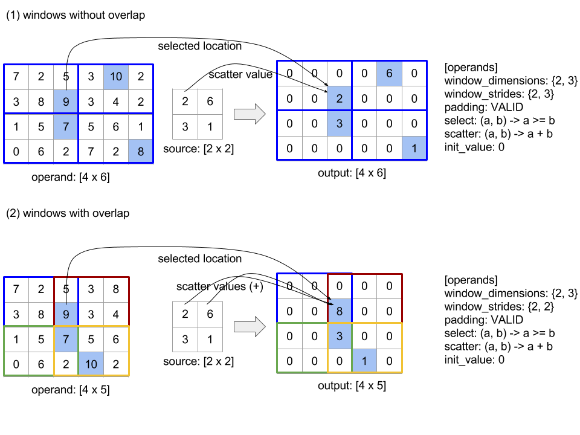
The evaluation order of the scatter function is arbitrary and may be
non-deterministic. Therefore, the scatter function should not be overly
sensitive to reassociation. See the discussion about associativity in the
context of Reduce for more details.
Sendlink
See also
XlaBuilder::Send.
Send(operand, channel_handle)
| Arguments | Type | Semantics |
|---|---|---|
operand |
XlaOp |
data to send (array of type T) |
channel_handle |
ChannelHandle |
unique identifier for each send/recv pair |
Sends the given operand data to a Recv instruction in another computation
that shares the same channel handle. Does not return any data.
Similar to the Recv operation, the client API of Send operation represents
synchronous communication, and is internally decomposed into 2 HLO instructions
(Send and SendDone) to enable asynchronous data transfers. See also
HloInstruction::CreateSend and HloInstruction::CreateSendDone.
Send(HloInstruction operand, int64 channel_id)
Initiates an asynchronous transfer of the operand to the resources allocated by
the Recv instruction with the same channel id. Returns a context, which is
used by a following SendDone instruction to wait for the completion of the
data transfer. The context is a tuple of {operand (shape), request identifier
(U32)} and it can only be used by a SendDone instruction.
SendDone(HloInstruction context)
Given a context created by a Send instruction, waits for the data transfer to
complete. The instruction does not return any data.
Scheduling of channel instructions
The execution order of the 4 instructions for each channel (Recv, RecvDone,
Send, SendDone) is as below.
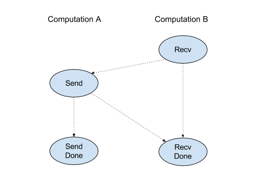
Recvhappens beforeSendSendhappens beforeRecvDoneRecvhappens beforeRecvDoneSendhappens beforeSendDone
When the backend compilers generate a linear schedule for each computation that communicates via channel instructions, there must not be cycles across the computations. For example, below schedules lead to deadlocks.
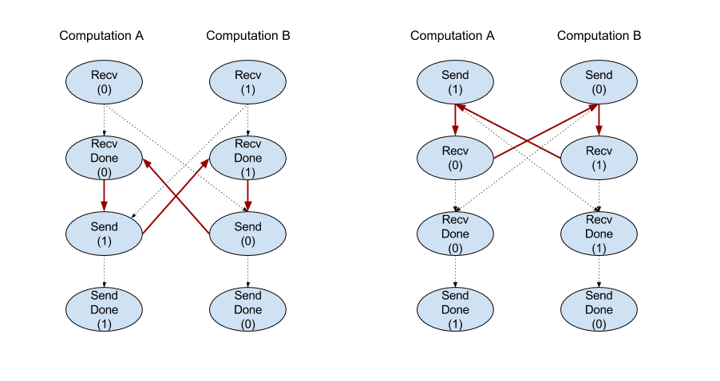
Slicelink
See also
XlaBuilder::Slice.
Slicing extracts a sub-array from the input array. The sub-array is of the same rank as the input and contains the values inside a bounding box within the input array where the dimensions and indices of the bounding box are given as arguments to the slice operation.
Slice(operand, start_indices, limit_indices, strides)
| Arguments | Type | Semantics |
|---|---|---|
operand |
XlaOp |
N dimensional array of type T |
start_indices |
ArraySlice<int64> |
List of N integers containing the starting indices of the slice for each dimension. Values must be greater than or equal to zero. |
limit_indices |
ArraySlice<int64> |
List of N integers containing the ending indices (exclusive) for the slice for each dimension. Each value must be greater than or equal to the respective start_indices value for the dimension and less than or equal to the size of the dimension. |
strides |
ArraySlice<int64> |
List of N integers that decides the input stride of the slice. The slice picks every strides[d] element in dimension d. |
1-dimensional example:
let a = {0.0, 1.0, 2.0, 3.0, 4.0}
Slice(a, {2}, {4}) produces:
{2.0, 3.0}2-dimensional example:
let b =
{ {0.0, 1.0, 2.0},
{3.0, 4.0, 5.0},
{6.0, 7.0, 8.0},
{9.0, 10.0, 11.0} }
Slice(b, {2, 1}, {4, 3}) produces:
{ { 7.0, 8.0},
{10.0, 11.0} }Sortlink
See also
XlaBuilder::Sort.
Sort(operands, comparator, dimension, is_stable)
| Arguments | Type | Semantics |
|---|---|---|
operands |
ArraySlice<XlaOp> |
The operands to sort. |
comparator |
XlaComputation |
The comparator computation to use. |
dimension |
int64 |
The dimension along which to sort. |
is_stable |
bool |
Whether stable sorting should be used. |
If only one operand is provided:
-
If the operand is a rank-1 tensor (an array), the result is a sorted array. If you want to sort the array into ascending order, the comparator should perform a less-than comparison. Formally, after the array is sorted, it holds for all index positions
i, jwithi < jthat eithercomparator(value[i], value[j]) = comparator(value[j], value[i]) = falseorcomparator(value[i], value[j]) = true. -
If the operand has higher rank, the operand is sorted along the provided dimension. For example, for a rank-2 tensor (a matrix), a dimension value of
0will independently sort every column, and a dimension value of1will independently sort each row. If no dimension number is provided, then the last dimension is chosen by default. For the dimension which is sorted, the same sorting order applies as in the rank-1 case.
If n > 1 operands are provided:
-
All
noperands must be tensors with the same dimensions. The element types of the tensors may be different. -
All operands are sorted together, not individually. Conceptually the operands are treated as a tuple. When checking whether the elements of each operand at index positions
iandjneed to be swapped, the comparator is called with2 * nscalar parameters, where parameter2 * kcorresponds to the value at positionifrom thek-thoperand, and parameter2 * k + 1corresponds to the value at positionjfrom thek-thoperand. Usually, the comparator would thus compare parameters2 * kand2 * k + 1with each other and possibly use other parameter pairs as tie breakers. -
The result is a tuple that consists of the operands in sorted order (along the provided dimension, as above). The
i-thoperand of the tuple corresponds to thei-thoperand of Sort.
For example, if there are three operands operand0 = [3, 1],
operand1 = [42, 50], operand2 = [-3.0, 1.1], and the comparator compares
only the values of operand0 with less-than, then the output of the sort is the
tuple ([1, 3], [50, 42], [1.1, -3.0]).
If is_stable is set to true, the sort is guaranteed to be stable, that is, if
there are elements which are considered to be equal by the comparator, the
relative order of the equal values is preserved. Two elements e1 and e2 are
equal if and only if comparator(e1, e2) = comparator(e2, e1) = false. By
default, is_stable is set to false.
Transposelink
See also the tf.reshape operation.
Transpose(operand)
| Arguments | Type | Semantics |
|---|---|---|
operand |
XlaOp |
The operand to transpose. |
permutation |
ArraySlice<int64> |
How to permute the dimensions. |
Permutes the operand dimensions with the given permutation, so
∀ i . 0 ≤ i < rank ⇒ input_dimensions[permutation[i]] = output_dimensions[i].
This is the same as Reshape(operand, permutation, Permute(permutation, operand.shape.dimensions)).
TriangularSolvelink
See also
XlaBuilder::TriangularSolve.
Solves systems of linear equations with lower or upper triangular coefficient
matrices by forward- or back-substitution. Broadcasting along leading
dimensions, this routine solves one of the matrix systems op(a) * x =
b, or x * op(a) = b, for the variable x, given a and b, where op(a) is
either op(a) = a, or op(a) = Transpose(a), or op(a) = Conj(Transpose(a)).
TriangularSolve(a, b, left_side, lower, unit_diagonal, transpose_a)
| Arguments | Type | Semantics |
|---|---|---|
a |
XlaOp |
a rank > 2 array of a complex or floating-point type with shape [..., M, M]. |
b |
XlaOp |
a rank > 2 array of the same type with shape [..., M, K] if left_side is true, [..., K, M] otherwise. |
left_side |
bool |
indicates whether to solve a system of the form op(a) * x = b (true) or x * op(a) = b (false). |
lower |
bool |
whether to use the upper or lower triangle of a. |
unit_diagonal |
bool |
if true, the diagonal elements of a are assumed to be 1 and not accessed. |
transpose_a |
Transpose |
whether to use a as is, transpose it or take its conjugate transpose. |
Input data is read only from the lower/upper triangle of a, depending on the
value of lower. Values from the other triangle are ignored. Output data is
returned in the same triangle; the values in the other triangle are
implementation-defined and may be anything.
If the rank of a and b are greater than 2, they are treated as batches of
matrices, where all except the minor 2 dimensions are batch dimensions. a and
b must have equal batch dimensions.
Tuplelink
See also
XlaBuilder::Tuple.
A tuple containing a variable number of data handles, each of which has its own shape.
This is analogous to std::tuple in C++. Conceptually:
let v: f32[10] = f32[10]{0, 1, 2, 3, 4, 5, 6, 7, 8, 9};
let s: s32 = 5;
let t: (f32[10], s32) = tuple(v, s);Tuples can be deconstructed (accessed) via the [GetTupleElement]
(#gettupleelement) operation.
Whilelink
See also
XlaBuilder::While.
While(condition, body, init)
| Arguments | Type | Semantics |
|---|---|---|
condition |
XlaComputation |
XlaComputation of type T -> PRED which defines the termination condition of theloop. |
body |
XlaComputation |
XlaComputation of type T -> T which defines the body of the loop. |
init |
T |
Initial value for the parameter of condition and body. |
Sequentially executes the body until the condition fails. This is similar to
a typical while loop in many other languages except for the differences and
restrictions listed below.
- A
Whilenode returns a value of typeT, which is the result from the last execution of thebody. - The shape of the type
Tis statically determined and must be the same across all iterations.
The T parameters of the computations are initialized with the init value in
the first iteration and are automatically updated to the new result from body
in each subsequent iteration.
One main use case of the While node is to implement the repeated execution of
training in neural networks. Simplified pseudocode is shown below with a graph
that represents the computation. The code can be found in
while_test.cc.
The type T in this example is a Tuple consisting of an int32 for the
iteration count and a vector[10] for the accumulator. For 1000 iterations, the
loop keeps adding a constant vector to the accumulator.
// Pseudocode for the computation.
init = {0, zero_vector[10]} // Tuple of int32 and float[10].
result = init;
while (result(0) < 1000) {
iteration = result(0) + 1;
new_vector = result(1) + constant_vector[10];
result = {iteration, new_vector};
}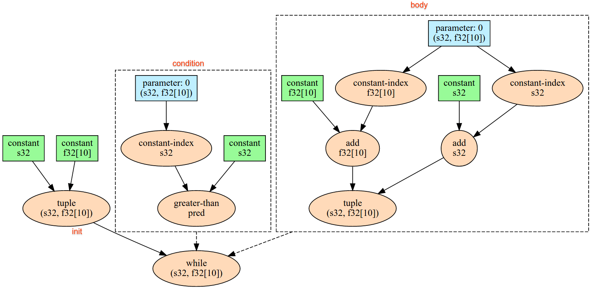
Created: January 9, 2023